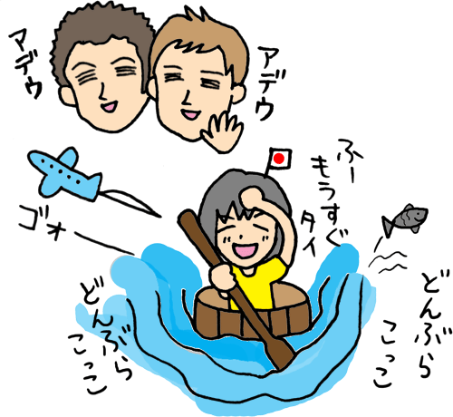
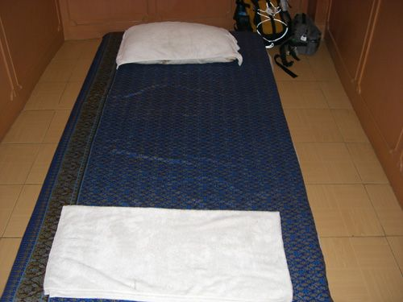
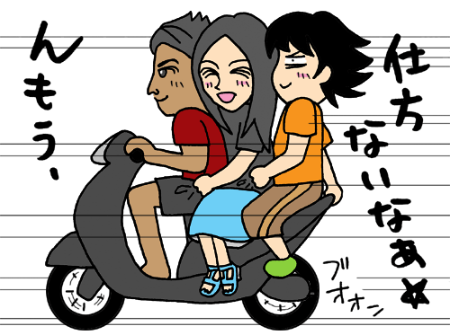

| ひょっこり東南アジア タイからマレー鉄道まで | |
| 鈴木麻里子 | |
| suemari (2013) | |
～はじめに～
世界一周旅行にでかけたいなぁ。
そう思ったのは30歳の秋だった。
でもヘタレだから無理、と即効で終わった。
しかし大人気の海外ドラマ「ビバリーヒルズ青春白書」が昔からキチガイのように大好きだった私は、海外で「ハーイ！」と軽やかに挨拶したりする夢を簡単にはあきらめきれず、30歳までの若者が１年間海外で働いたりできるというワーキングホリデービザを申請し、ニュージーランドへ飛び立った。
ちなみにニュージーランドとは、それまで私も全然知らなかったのだが、オーストラリアの隣にある日本と同じような大きさの、自然と羊の夢の国です。
英語もろくにできないのに、ドイツ人から車を買い、１人旅をし、森の中で寝、湖で魚を釣り、海で貝を採り、と全くビバリーヒルズ青春白書ではないけれど、旅の途中で出会った外国人の友達と一緒に暮らして「ハーイ！」と挨拶しあう夢が達成できた。（前著「思いっきりニュージーランド！（出版芸術社）」は大好評発売中☆）
そうしてニュージーランド青春白書を大満喫した私は、あとは日本へ帰るだけ......！ だったのだけれど、ひょんなことからタイへ寄り道をすることに。
ここで白状をすると、なぜかニュージーランドで出会った日本人の友達は、みんなタイへ行きたいと口走っていた。私もタイに行ってみたいなー、とご多聞にもれず思っていた。しかし実際に行く人はいなかったし、私だって行くハズがなかった。
だいたい、20万円もしたニュージーランドへの往復航空券の復路を無駄にするなんて、そんな聞いただけで卒倒しそうな恐ろしいこと絶対にできようもなく、タイのガイドブックだって持ってないんだから行けるわけないじゃないか。
しかし、ビバリーヒルズが「高校白書」から「青春白書」へとタイトル変えしたように、私のニュージーランド青春白書にも続きがあったみたい。
そうしてひょっこり行ってしまった東南アジア、今度は一体どんな冒険が待っているのかな!?
題して「東南アジア高校白書」!! （ダサいので即効却下。）
それは初心者のスーがタイへ転校してくることから始ま...（嘘。）
2009年4月 鈴木麻里子（スー）
★旅の軌跡★
2007/ 1/ 7 日本出発2007/ 1/ 7～ ニュージーランド（11ヶ月滞在）
（※ニュージーランドの旅はこの本では触れません）
2007/12/ 2 シンガポール チャンギ空港
2007/12/ 3～ タイ バンコク①
2007/12/13～ タイ アユタヤ（列車移動）②
2007/12/17～ タイ バンコク
2007/12/19～ タイ カンチャナブリー（列車移動）③
2007/12/22～ タイ バンコク
2007/12/26～ カンボジア シェムリアップ（車移動）④
2007/12/29～ タイ バンコク
2007/12/31 マレー鉄道乗車
2008/ 1/ 1 マレーシア ペナン島⑤
2008/ 1/ 2 マレーシア クアラルンプール⑥
2008/ 1/ 3～ シンガポール⑦
2008/ 1/ 5 日本到着
コラム ストップオーバーで広がった旅
２ 寝床を探して三千里
３ タイに到着
コラム ドミトリーってこんな感じ
４ タイのセレブ
５ タイを歩く
コラム 値切りのテクニック
６ 危険な海外 トゥクトゥクでカオサンへ
７ バンコク観光１ 親切な詐欺師
８ バンコク観光２ 王宮周辺はペテン師天国
９ 鉄道でアユタヤへ
コラム 携帯が使えるようになった話
10 アユタヤ遺跡巡り
11 ナイトマーケットのオッサン
12 アユタヤを出る
13 鉄道でカンチャナブリーへ
14 騙されボッタくられ泰緬鉄道
15 カンボジアへ行こう
16 カオサンのゲストハウス
コラム 予約のできない安宿
17 バンコクの友達
１ 序章
ふかふかのソファーで寝ようと思っていたのに、まさか中に入れないなんてっ!!（涙）
出国審査の向こうに広がる煌びやかな乗り継ぎエリア。
あっち、あっち側に行かせて～～!!
世界一の空港と言われるほど施設の充実したシンガポールのチャンギ空港。
しかしそれはトランジットエリアの中であって外ではない。
飛行機に乗る用事がなくとも誰でも入れるチェックインカウンター付近の硬いイス（プラスチック製）の上、それがアジア到着初夜の寝床でした。
――遡ること１ヶ月前。
ワーキングホリデーでニュージーランドに来ていた私は一年間の往復航空券を持っていた。あまりに楽しい毎日だったので、当然一年間そこで遊び倒すつもりでいた。
しかし私がもともとニュージーワーホリを選んだのは世界一周旅行に出る勇気がなかったというのも理由の一つ。そして持っていた航空券はシンガポール経由。
ニュージーランドの野生生活で度胸をつけていた私は、アジアにも足を伸ばしてみたいと淡い期待を抱く......。
シンガポール航空の１年往復航空券は、ニュージーランドへ来る時シンガポールを経由してきた。そして帰りもシンガポールを経由して日本へ帰る。「経由」と聞くと、乗り換えだけ、もしくはシンガポールで数日滞在程度？ と考えていた。
ところがどっこい突然タイに行く理由ができた。ニュージーで出会って仲良くなったマーク＆デイビッド（スペインの一地方カタロニア人）がバリ島でサーフィンをした後にタイのバンコク経由でスペインに帰るというのだ。
私がタイに行けばもう１度会える！
それなら残りの１ヶ月をアジアに回そう！
マーク達のバンコクでの滞在日と滞在先をストーカーのように聞きだし、タイに行くことに決めた。
しかし私が現時点の航空券で行けるのはシンガポールまで。そして日本へ帰るのはシンガポールからにしないと20万円も出した高い航空券が無駄になる。とゆーことは、航空券をシンガポールで止めておけばいいのだ。
それで思いついたのがストップオーバー（経由地で途中降機して24時間以上滞在すること）という素敵な方法。
↓
自分でタイに行く。
↓
自分でシンガポールに戻ってくる。
おおお、完璧だ！
しかし、そこに一つ問題があった。
私がシンガポールに到着する２日後に彼らはスペインへと飛び立ってしまうのである。
つまり、シンガポール到着後すぐにタイへ飛ばなきゃ会えないってことであり、ゆっくりどんぶらこっこと鉄道やバスに揺られていくのでは本末転倒なのだ。

よし、じゃあシンガポール発バンコク着の航空券を買おう！ シンガポール到着後すぐにタイへ飛べばギリギリで会えるハズ！（どこまでストーカーだアンタ。）
格安航空会社ジェットスターのウェブサイトにて航空券検索、クレジットカードで決済完了！ ......ニュージーランドにいるのに、シンガポールからバンコクまでの航空券がこんなに簡単に買えるなんて凄いぞインターネット。
現代文明を空恐ろしく感じながらもこうして力ずくでシンガポール←→タイという図式ができあがったのでした。
ストップオーバーとは、「経由地で途中降機して24時間以上滞在すること」で、分かりやすく言えば、「途中の経由地で飛行機を降りて何日間か滞在した後、再び飛行機に乗り込んで目的地を目指す」という方法のこと。
しかしそんな素敵な方法がこの世に存在するだなんて全く知らず、それを知ったときは、ＪＲの長距離切符で途中下車が可能だと初めて知ったときと同じような衝撃を受けた。
航空券の料金は変わらずして、シンガポールが「乗り継ぎだけの面倒な国」から「観光もできるワクワクの国」へと変わった瞬間だ。
しかもシンガポールだけでなく、格安航空会社などを利用すれば近隣諸国へも数千円～で簡単に行けてしまうんだから、ストップオーバーってお得すぎる～！
ニュージーランドへ行くのに直行便は４万円ほど高いからと、少しでも安い乗り継ぎ便にして本当に良かった♪
まぁ一つ難点をあげるとすれば、再びシンガポールに戻ってこなければならないってことだけど、復路の航空券が確保されているというのが経済的な心のより所なので致し方なし。
ちなみに今回の件とは関係ないけれど、「オープンジョー」という方法もあって、往復航空券なのに「現地に到着する空港」と「現地で出発する空港」を別にすることができる。
それは例えば、「日本からシンガポール」へ行き、「なんらかの手段」で移動して、「タイから日本」へ帰るといった感じのもの。
これらの方法を利用すれば往復の格安航空券で色んな国へ行けてしまうんだから凄い......！
東南アジアの格安航空会社
●エア・アジア（Air Asia）http://www.airasia.com
マレーシア・タイ・インドネシアを始めとした広域を網羅。
●ジェットスター（Jetstar）
http://www.jetstar.com
シンガポール近隣諸国間、オセアニア路線も。
●タイガー航空（Tiger Airways）
http://www.tigerairways.com
シンガポール近隣諸国間、オーストラリア間、インドへも。
●セブパシフィック航空（Cebu Pacific Air）
http://www.cebupacificair.com
フィリピン近隣諸国間、大阪、ソウル、台湾等へも。
●ライオン・エア（Lion Air）
http://www.lionair.co.id
インドネシア国内間、シンガポール、マレーシアへも。
２ 寝床を探して三千里
2007/12/2
ゴォー......。
ここは飛行機の中。ニュージーランドのクライストチャーチから飛行機に乗って、シンガポールに向かうところだ。11ヶ月という短いニュージー生活でありながらも、ニュージー人のまぶしい笑顔によってフレンドリーさに拍車がかかっていた私は、隣に座っているアジア人の中年のおじさんに笑顔で話しかける。
「ハロー！ シンガポールまでどのくらいかかるんですかね？」
「今の機内放送では10時間って言ってましたよ」
うっ......！！
「そうですか、どうもありがとうございます☆」
おじさんの口臭が予想外にキツかった為、友達作ろう大作戦は早々に幕を閉じた。
座席に設置されているモニターで最新の映画を見たり、軽く眠ったりしながら、飛行機はアジアの第一歩であるシンガポールのチャンギ空港に到着！ ちなみに現地時間は夜の10時すぎ。
飛行機を降りた他の皆さんに混じって到着ターミナル内を通り、シンガポールの入国審査へ。
そこでふと気づく。あれ、荷物どこ？
機内に持ち込むにはちょっとばかし大きかったので、預け荷物にしておいたんだけど、ひょっとして入国しないと取れないの??
う～ん、翌朝の飛行機でバンコクに行くからシンガポールに入国しなくていいと思っていたのに、ターンテーブルって入国審査の後にあったんだっけ......？
まぁそれなら仕方ない、荷物を放っておくわけにはいかないからシンガポールに一旦入国しよっと。
入国審査を通り、オレンジのキャリーバッグを無事にピックアップ。ぐるっと辺りを見渡すと、飛行機で一緒だった日本人の男の子シンヤくん(22)発見。
「シンガポール着いたね～！ ところで今夜はどこで寝るの？」
「あぁ、スーさんこんにちは。僕はホテルを予約してありますよ」
「え、ホテル!? それって高いんじゃないの!?」
「でも夜中だし仕方ないですよ。スーさんは？」
「私は空港で寝るよ。チャンギ空港にはふかふかのソファーとかあるし」
「えーっ、その手がありましたかー!! そうかぁ、全く気がつきませんでした。そうかぁ、ソファーかぁ。次はそうしようかな」
会話を聞いているといかにも旅慣れているような口ぶりであるが、実際に今まで空港で寝たことなどなく、今回が初の試みであることは言うまい。
「それじゃ、よい旅を！」
「ばいばーい、気をつけてね～！」
大きなスーツケースをゴロゴロさせて空港を出て行くシンヤくんに大きく手を振って笑顔で見送ると、ぽつねんとロビーで１人になった。
さて、これからどうすればいいのカナ......？
こんな所でぼーっとしていると、心配しておまわりさんやらタクシーの客引きやらが寄ってくるかもしれないので旅慣れた人っぽく振舞おう。
キョロキョロしてみると、壁にシンガポールの無料の地図発見。おぉ、何て便利なものがあるんだ。しばし見入る。
......いかんいかん、今シンガポールの地図に用はない！ その前に早く寝る所を探さないと。
私がいた場所は広いチャンギ空港内ターミナル２の到着ゲート。そして明日乗る飛行機はターミナル１の出発ゲートらしい。ということで、スカイトレインというモノレールのような乗り物に乗ってターミナル１へ移動。
やぁやぁ、明日朝乗るジェットスター航空のカウンターで早速チェックインしてとっととトランジットエリアに入りますよ......って、カウンターに人の気配が感じられない。しかもご丁寧に何だか薄暗いような。。。
..................。
深夜０時、チェックインできない→搭乗券もらえない→出国審査通れない→ソファーのあるトランジットエリアに入れない→野宿。
..................。
と、搭乗券なくても出国できないカナ？
ソワソワしながら出国審査の所に入ろうとすると、前に立っていたガードマンにパスポートと搭乗券を見せるよう止められる。
ありません......（涙）。
カウンターさえ、チェックインカウンターさえ開いていればお姉さんに搭乗券もらえるんですぅ!!
出国審査の向こうに広がる煌びやかなトランジットエリアが眩しい。あっち側に行かせて～!! と心の中で叫びながら鋭い目をしたガードマンの前をしぶしぶ離れた。
搭乗券がないとやっぱり出国はできない、と。（当たり前。）
......でも私と同じような人もきっといるハズ、とりあえずインフォメーションで聞いてみよう。
「飛行機にチェックインしてからでないとトランジットエリア内には入れませんし、お客様と同じようなケースの方は、中でお休みになられた翌朝、外に出られます」
「えーっ！ だって荷物は!?!?」
「荷物はそのまま放っておかれて翌朝探しに行かれるようですが......」
マジかー!!!!
中で寝る為に荷物犠牲にするツワモノー!!!!
まぁ確かにトランジットエリアを出る時にチラッと不安がよぎったけれど、、、やっぱりそういうことだったか......。（←旅初心者）
どこかにふかふかソファーはないんかい!? と誰もいないチェックインカウンター付近を探すも硬いプラスチックのイスばかり。コーヒー屋さんに一応柔らかいイスがあるとさっきインフォメで教えてもらっていたので、近くに行ってみたがとてもそこで一夜を明かせる雰囲気ではない。
どこで寝よう～～～（涙）。
たくさんの荷物を抱えながらウロウロしていると、外人のオッサンがプラのイスに寝っころがっているのを発見！ おー、じゃあ私も寝れるかも、と早速他の空いているイスを確保。

こんなんですけど......。
イスとイスの間が開いているのでかなり痛そうだなぁ。。。そう思いながら先駆者のオッサンの方に目をやると、いつの間にかオッサンはイスから姿を消し、ツルツルの床の上でボロゾーキンのように横たわっていた。
やっぱりイスの上は痛かったんだ。
......痛そうだから寝るのはもう少し後にするとして、インターネットできないかな～？ トランジットエリア内なら無料でできるのに、ここは外だからやっぱり無理かなぁ......？
愛用のノートパソコン、レッツを取り出し無線ＬＡＮの電波チェーック！ やったぜ電波キャッチ！
でもパスワードが分かりません。
うぅぅ、アジアに入った途端に逆格差を思い知らされようとは夢にも思わなかったよ......（涙）。
広げた荷物をまとめてもう一度インフォメのお姉さんの所へ。
「無料で無線ＬＡＮ使える所、ないですかね？」
すると中華系の美人のお姉さんは、「一晩だけなら」と何だか艶めかしいことを言った後、自分のＩＤとパスワードで無線ＬＡＮを使用できる状態にしてくれた。ヤッター!! 非常感謝!!
嬉々としてベッド（プラのイス）の所へ戻り、冷たい床の上に荷物を配置。
キャリーバッグを机に、愛用していたナイキのパーカーを下に敷いてその上に座り、簡易オフィスのできあがり～☆
幸い周りにあまり人がいない、我ながら良くやっているじゃないか、ふふふ。
そうこうして既に深夜２時、ネットができるから寝ずに朝まで起きていられるかな？
颯爽とファンの為にブログアーップ！
友達にメール送信～！
他にやることないからネットサーフィーン！
さぁ朝まで起きてるぞっ！
......ぐるーんぐるーんぐるーん......。
飛行機であんまり寝ていない上に移動の疲れもあって３時すぎから気がおかしくなるほど眠くなってくる。
ねむ...ねむっ......ぐー。あかん、レッツ片付けてから......ぐー。
瞼が開いているのか閉じているのか分からない状態でレッツを片付けようとしていると、制服を着たおじさんが私の方へやってきてこう言った。
「３時半から近くのチェックインカウンターで受付が始まるからこの場所から移動してね」
そ、そんな殺生な！ ねむっ、ねむ......ぐるーんぐるーん。って頭を回している場合じゃないっ！ あわわ......寝る場所寝る場所。。。
おっ、あそこにも良さげなイスが!! やっと寝れるぞーっ！
近寄ってそこに横たわろうとすると、２メートル先にあった観葉植物の後ろに黒っぽいものがチラリと目に入ったので、ゴミかな......？ と目を向けた。
ゴミじゃなくてヒトー!!!!
一瞬腰が抜けそうになるも、あそこなら目立たなくていいよなぁ、とちょっと羨ましくもなる。
そうか、空港って実は目立たない所に結構人が寝ているものだったのか。。。
自分は大人しくプラのイスをベッドに選択。
空港の中は明るいので、パーカーを逆向きに着てフードを顔の上に被せる。荷物同士をワイヤーロックで縛り、カバンのベルトを握って気休めの盗難防止。
それにしてもやっぱりイスの開いた部分が背中に痛い......、床に移動しようか、でも冷たいかも......痛いか冷たいかのどっちがマシだ？ なんていうどうでもいい葛藤を繰り広げつつ、１時間。
寝れるわけねー（涙）。
眠い目をこすりつつチェックインカウンターを見やると、ジェットスターの所に人が!!!! こうして朝の５時、待ち望んだ天国への入場券（搭乗券）ゲット！（涙）
恋焦がれたトランジットエリア内に入り、睡眠用チェアーがあるというのでそれを探し出す。
これがそれかーっ!!
っていうか変な形つけないでまっすぐにしてくれた方が寝やすいと思うんですが。
とにかく少しでも寝るぞオリャ～!!!
と横たわるも、頭の部分に余計な枕がついているお陰で首の部分が苦しい。スタイリッシュとかカッコイイとかどうでもいいからもっと人間工学的に優しい設計を希望します（涙）。
６時すぎに体にムチ打って起き上がり、本命のタイへ飛び立つべく飛行機に乗りこんだ。
３ タイに到着
シンガポールから約１時間半でタイのスワンナプーム空港に到着。
入国審査を無事に抜けると、ＡＴＭを発見したので国際キャッシュカードを使って早速タイのお金を引き出そうと試みる......が、画面も早速タイ語でのお出迎え。クネクネと蛇が踊っているようにしか見えない文字列に、これが本当に同じ人類が使う文字なのかと背中から大量の汗を噴出していると、隅っこに一つだけ見覚えのある文字列を発見。
[ English ]
あぁあ～！ 日本では全く視界にすら入らない、いやむしろ記憶から消している文字列がこんなに私を安心させてくれるなんてっ！
背中の汗を毛穴にひっこめながらとりあえず6000バーツ（当時のレートで約20,000円）を引き出して空港内を散策。
所々に無料の地図が置いてあったのでいくつかゲット。しかも日本人が作ったと思われる日本語の詳細な広域地図もあり、とっても便利～！ 駅や繁華街、主要な観光地、乗り物に乗る際の注意や金額など、この地図だけで十分楽しめる！ ガイドブックを持っていないからこれはありがた～い☆
次に売店発見。空港なので高い事は分かっていたけど何か食べないとお腹が空いていたので
春巻き50バーツ（約170円）を買って食べてみる。
ぷりぷりのエビが入っていてうま～い☆
さて、いつまでも空港でゆっくりしているわけにはいかないので、街中へ出なきゃ。
できるだけお金をかけない方法っていえば、やっぱりバス。それも普通のバスはいきなり敷居が高いので、初心者は素直に空港バス150バーツ（約500円）に乗ろう。
運転手のおっちゃんに行き先の住所と地図を見せ、「ここ行く！ ここで降りたい！」と片言でアピールし、無事に降ろしてもらった先は、ニュージーで出会って仲良くなったカタロニア人のマーク(28)とデイビッド(24)が泊まっているユースホステルの近く。
のハズ。
うーん、場所がイマイチよく分からんなぁ......、こっちでいいんかな～......？ 地図を持ってキョロキョロしながら歩く。
......ゥー。
は～ん？？？ 何か声がしたような。辺りを見回す。
気のせいか......。しかし暑いな......。
再び歩きだそうとすると、「スー！」と聞こえたような。
うーん、幻聴が聞こえてくる程暑いなんて、早くホステルを見つけて休まなきゃ。。。振り返って遠くをぼーっと見つめると、人のようなものがゆらゆらしている......？
マークとデイビッドだーーーーっ!!!!!!
あまりの嬉しさに走っていって２人に抱きつく。うだるように暑いからといって陽炎でないことを確認した。
どうやら私が歩いていた道は正しくて、２人は外からホステルに向かって帰るところだったみたい。待ち合わせをしていたわけでもないし、実はしばらく連絡も途絶えていたので本当に再会できるかどうかなんて半信半疑だった。
つーことで本日の宿は、ユースホステル。
Hostelling International Sukhumvit
ドミトリー（相部屋） 300バーツ
キーデポジット 200バーツ
ネット 100バーツで無線使い放題
朝食付 ホットシャワー
ここはあらかじめ、ネットで予約をしていった所だったんだけど、会員じゃなくても料金が同じだったのでラッキー☆
女子専用の相部屋で１泊約1000円、キーデポジットというのは部屋の鍵の保証金で返却時に返金してもらえる。ホットシャワーは文字通り温かいシャワーが使えるという意味で、実はタイは暑いので安い宿では冷たいシャワーしか出ないという所も多いらしい。
ＢＴＳと呼ばれるスカイトレインのトンロー駅から歩いて３分でアクセス良し、ホステルの中はタイの小物が置かれていて雰囲気もなかなかいい！
２人がいい所に泊まってくれていて良かったー!!
タイの事なんてガイドブックもなくて全く分からなかったから最初にここに泊まれたのはかなりいい感じ!! ......と言ってもマーク＆デイビッドは明日バンコクを出てスペインに帰っちゃうのでしばらくしか一緒にいられないのが残念だけど。
と、１人はしゃいでいると２人の表情がなんだかさえない。
「実はバリ島からそのまま持ってきたサーフボードが送れなくてさ......」
「ん？ それって飛行機に乗せていけばいいんじゃないの？」
「スペインに帰る飛行機はサイズオーバーで無理なんだって」
「じゃあ郵便局は？」
「デカいから断られた。ボードの問題が早く片付いていたら他の国へ足を伸ばしてそこから帰国する予定だったんだけど、この為にバンコクで足止めくらっちゃって」
い、今なに言うたー!!!!
じゃあボードの問題がなかったらアタシがバンコクにノコノコやってきても２人はいなかったってこと～!?
アブネー。。。
「ははは、その場合はちゃんとスーに連絡してたって！（笑）」
......ここしばらく連絡途絶えてましたけど？（涙）
そうしていると空港で教えてもらったらしい民間の運送業者がやってきた。見積もりなんてすぐに終わると思ったのでマーク達と遊びたい私も一緒に待っていると、やってきた担当者が「僕じゃこの荷物は無理だから他の者を呼ぶ」と何度か交代したり、電話をしてその返事を待ったりだとかして、なかなか見積もりが出ない。どうやら業者も大きな荷物に手間取っている様子。
そんなこんなで暑い中待たされた時間はなんと１時間。
タイだからそんなに高くないだろう。と高をくくっていた先進国の私たちに伝えられた容赦ない金額は、
31,800バーツ。
（約10万５千円）
あまりにも高くて気絶しかける先進国民。
「それならサーフボード売ってスペインに帰ってから買いなおした方が安いんじゃないの!?」
「買いなおすより送った方がマシだよ......。これ初めて買った思い出のボードだし......」
魂の抜けたカタロニア人２人はそう答え、私の頭に流れ出したドナドナの音楽と共に、２人分のボードとその他の荷物をめいっぱい詰め込んだボードケースは無事に引き取られていったのでした。
ドナドナドーナードーナー。。。
ユースホステルというのは、ドイツで生まれた世界的な「旅の宿」ネットワークで、もちろん日本にもあるし、ニュージーランドにもあった。ホテルに比べて安く泊まれ、友達もできやすい。
シングルやツインの部屋もあるけれど、安くあげるためにドミトリーと呼ばれる相部屋に泊まる旅人が多い。
最初は見知らぬ他人との相部屋なんて怖い！ と思ったけれど、慣れてしまえばそうでもない。ただ寝るだけの部屋なんだもん。
まず、部屋に入ったら、空いているベッドを探す。そして、基本的には２段ベッドなので、両方空いていたら下段を確保。この時、全てのベッドが空いている場合は、部屋全体を見渡して近くにサイドテーブルや窓があったり、コンセントがあるなど、少しでも快適に過ごせそうな所を選ぶ。貴重品以外の重い荷物をベッドにくくりつけ（ロッカーがある場合もあるので、南京錠を持ち歩く。）、あとは街へレッツラゴー！
夜はベッドに入る時間がまちまちなので、先に寝ている人を起こさないよう静かに入り、携帯や懐中電灯などの小さな明かりで自分のベッドへ。明かりやイビキなどで眠りを邪魔されたくない場合は、アイマスクと耳栓を装着して眠りにつくのです。ＺＺＺ......
４ タイのセレブ
難航していたサーフボードの輸送が終了したので、マークはバリ島で出会ったという友達のサンティ（39：カタロニア人）に電話し、デイビッドと３人で待ち合わせ場所へ。
......カタロニア人っていうのは日本人みたいにどこにでもいる人種らしい。私がそれまでに出会ったカタロニア人の皆さん（15人ほど）は根が真面目で明るく、身だしなみもきちんとしていて節度ある行動を取るところが日本人によく似ている。
待ち合わせ場所のサイアムに到着し、サンティに初対面。
ほら、やっぱりなんか日本人っぽい。
メガネをかけているのに胸にもメガネ。心配性で用意周到のＡ型かと思いきや、強い日差しの下ではサングラスに変更するという慎重派。
遠視で目がデカく見えるのが愛嬌のサンティは世界を旅して周っていてタイには３ヶ月いるらしい。
ついでにタイ人の彼女もいるという手の早さ。
サンティに色々連れて行ってもらい、お腹が空いた頃にサイアム・パラゴン内にある大きなフードコートへ。
アイスタイティー 35バーツ
ミックスヌードルwithタイソース 55バーツ
（２つで約300円）
タイティーはオレンジ色、ミックスヌードルの汁はピンク色という日本ではお目にかかることのない素敵な色をしているよ。
その色と想像に反して、タイティーはコンデンスミルク入りでめちゃ甘、ピンクヌードルは意外に普通であっさりとおいしかった。
夜にはタイ人でサンティの彼女のパイ（37：ＴＶ局勤務）と同僚のトン（37：女プロデューサー）とパイの幼馴染のビー（39：若く見える可愛いアナウンサー）が加わり日本食居酒屋にてワイワイ。
ＴＶ局に勤めている女性陣の皆さんは、さすがに英語がペラペラで美しく、デキる女という感じ。
夜中の１時に居酒屋を出てパイの自宅マンションにお邪魔すると、普通の日本のワンルーム（新しめ）と変わりなかった。
日本でも普通だよね、うんうん。
ホステルに戻った翌昼、マーク＆デイビッドがまたサンティとご飯を食べに行くというので一緒についていくと、パイが運転する車で迎えにきてくれた。
日本でも普通だよね、うんうん。
車を停めた先のレストランに入り、メニューを見て頼む。
パッタイ 290バーツ
（タイ風やきそば）
リーフサラダ 140バーツ
（レタス、タマネギ、キュウリ、プチトマトのサラダ）
２つ合わせて約1400円。日本でも普通だよね、うんうん。
って、、、普通でたまるかボケー!!!!
おかしい。
タイなのに全然安くない。
安いどころか激高で、このまま行ったら到着早々死んでしまうのは確実だ。ここは本当にタイなんだろうか？
そんな疑問が頭をかすめる。
ふと見ると、レストランの片隅にインターネット無料のパソコンが設置されているのを発見。おっ、ちょっと使ってみよう！
......動かない。
そこだけタイらしくすなー!!!
レストランを出た後は、華僑で裕福だったパイと別れ、カタロニア人３人がバリ島で出会ったという、これまたタイに住むカタロニア人ジェームス(31)の家へ。
......ひょっとしたらここはタイではなくスペインなのかもしれない。（カタロニアはスペインの一地方。）
で、ジェームスんち。
戸建てプール有り使用人付き、月70000バーツ物件～!!!! ヒャー!!!!
（約24万円／月）
マーク達が水着になってプールで泳ぎだしたので、水着のない私は部屋でゆっくり昼寝をさせてもらうとしまひょ。は～、極楽～。
みんな今夜出国だけど、夕食は一緒に食べてさよならパーティするだろうからゆっくりＺＺＺ。。。
夜に近づいてそろそろお夕食かしらんと待機していたら、なんだかバタバタ騒がしい。
「ほら、タクシーが来た！ 早く乗ろう！ じゃ!!」バタン！
え!? あれ!? お夕食は!?!? マーク!? デイビッド!?!?
一緒に出国するサンティが姪へのみやげを買いに出てなかなか戻ってこなかったので、そのまま空港へ直行することにしたらしい。
ブロロロォー。
......何しにタイに来たんだったっけか？
あまりにあっけない別れに目が点になった。
５ バンコクを歩く
マーク＆デイビッドがスペインに帰っちゃったのでこれからは１人。まずは周辺を歩いてみようと、ホステルのあるトンロー駅からスカイトレイン沿いに次の駅の方へ進んでいると、「タイ式マッサージ2時間300バーツ」の看板発見、安い！（ハズ）
タイに来てからずっとマッサージを受けたいと思っていたので、中に入って金額を確認し中へ通してもらう。

個室で楽な服に着替えて横たわり、鞄は常に目の届く所に置く。
私を担当してくれたのはディ(29)、細くてたおやかな可愛い女の子。落ち着いた感じの薄暗い照明の下でマッサージをしてもらいながら軽く会話。
タイ人とそんなにたくさん話をした事があるわけではないけれど、たまーに、「あの～、鼻つまってないすか？」と思う。
研ナオコ似のディもやっぱり鼻がつまっていて、その上、タイ語の発音の特性か、「ニャー」とか「ミャー」とか「にゅ」とちらほら聞こえてなんとも力が抜ける。
研ナオコは宇宙人と言われていたけど、実はタイ人なんじゃないの？
今世紀最大の謎が解き明かされようとしていたその時、研ナオコが、いやディが片言の日本語で話しかけてきた。
「ワタシ、日本人、スキ......」
「はぁっ、どうもどうも......」
研ナオコも髪型をロングにしたら美人に見えるんじゃないかしら。ディもナオコ似だけど、美人だよなぁ。これが紙一重って奴か。
「ワタシ、日本人のカレ、いる」
紙一重といえばアホの坂田とチワワも......ん？ 日本人の彼？
「彼って何歳？」
「42歳デェス」
なぁっ!? これは坂田師匠と研ナオコとチワワが同じ星から来たとか後回しだ！
「彼って結婚してるの？」
「してる......」
......駐在さん！ ペットはチワワだけにして下さい！（涙）
私が押し黙っていると、ディが静かにこう言った。
「日本人、スケベよね......（ポッ）」
出してー！ ここから出してー!!（涙）
ウエーン！ 同じ日本人として恥ずかしいよー!
顔から火が出て周りに燃え移らないか心配しつつ、特に腕前が良かったわけでもないナオコ式マッサージは終了した。
マッサージ店を出ると近くに美容院発見。
「シャンプー＆カット200バーツ」と、ガラスに貼られた日本語を見ていると中から声をかけられたので、庶民値段より高いような気もする（約700円）けどまぁいいかと入ってみる。
この辺は日本人が多く住んでいると聞いたスクンビットという界隈で店舗も綺麗だし、普段から日本人相手にしてるなら、まともに切ってもらえるんじゃないかな？
そうしてイスに座ると目の前になんと日本のヘアカタログが。
おお！ これは期待できるかも!?
目の前のアーノルド坊や顔をしたロングのお姉さんに、コレにしてちょうだいと意思を伝える。
笑顔ではにかむお姉さん。
ジョキジョキ。ザックザック。
う～ん、とても思い切りのいい切り方だね☆
店に入る前は、どうせ言葉も通じないし
タイ人の流行と思われるニワトリみたいな髪形になるかな、とワクワクしていたのだけれど、そんな期待も空しく
ぼんぼりのような頭になって終了。
さて、次は楽な半パンツとサンダルを見に行こう。
動き回るには楽な格好じゃないとね！
適当に見つけた地下マーケットに入ってみると、まずサンダル発見。ひときわ目立っていたカエルのようなグリーンに目をつける。
相手の言い値は160バーツ。よし......キリのいい所からいこう。
「ちょっと高いなぁ～......100バーツ！」
「そりゃ無理ってもんスよ！ 150でどうスか？」
「じゃあ130！」
「駄目駄目、無理っスよ！」
「130なら買うから！ ね！」
との掛け合いが続き、結局130バーツ（約450円）で購入。
値切り初体験。た、楽しい......!!
よし、サンダルの次は半パンツだ！ と、別のお店を見回るもいいのが見つからず、中でもマシだったのが250バーツ（約850円）。
「これはディーゼルのだから値引きはできないのよ。ほらこのラベル、ディーゼルでしょ？」
こちらの売り子のおばちゃんは頑として引き下がらない。
言い値でなんて買いたくないけど早く買っちゃいたいからもういいや。だって、ディーゼルのなんでしょ？
～～～ 数日後 ～～～
サンダルの留め具、落下。
ディーゼルの半パンツ、
股が裂けた。
値切りは慣れ。大胆に、かつ慎重にいって安くあげたい！
★店をいくつか回って相場を調べる
地元率の高い所なら適正価格、観光客の多い所ならふっかけてくる可能性が高い。コンビニやスーパーで物価調査も忘れずに。
★他の人が買っている値段をそっとチェック
欲しいと思ったら、少し距離を置いて、他の人にいくらで売ったのか観察。現地人が買っている現場に遭遇したらラッキー。
★自分が買ってもいいと思った金額より少し下から始める
相手も下げてくるので、自分も金額を上げればちょうどいいところで折り合う。金額を言ったときに相手の顔が凍りついたり、もう相手にしてくれなかったら、その金額は無理です。
★確実に買うと言う
これ以上下げてくれそうにないような雰囲気になったら、ほんの少しだけ下げて、「○○バーツなら絶対買う！」と言ってみる。
★まとめ買いをする
これも買ったら安くしてくれる？ と聞いてみる。
★去ろうとする
追いかけてこないなら脈なし。そのまま去るのみ。
６ 危険な海外 トゥクトゥクでカオサンへ
ホステルで荷物を整理していると、「日本人ですか？」と同じ部屋の女の子に声をかけられた。
マリさん（28：大阪人、看護士）は昨夜バンコクに到着したばかりで、私が次の宿を探しに行こうと思っていると話すと「ご一緒しませんか？」と誘われたので本日行動を共にすることに。
まずはナショナル・スタジアム駅の周辺に宿があると聞いていたのでスカイトレインでそこへ。安宿街にあるゲストハウスを一通り訪れて料金＆部屋の中チェック。でもやっぱり駅近く、安くてもシングルで400バーツ（約1300円）、ホステルの300バーツより高いなぁ。
そうやって色々歩き回っていると「あなた日本人？ 英語話せる？」と宿の受付のおばちゃんに聞かれた。何だろうと思い、一応イエスと答えると隣に座っていた日本人の男の子が話を始めた。
「昨日の夜、外人（モルジブ人）と仲良くなって一緒に飲みに行ったんスけど、酔いつぶれてその後の記憶がなくて、朝起きたら警察署にいたんス。で、どうやらパスポートとクレジットカードと財布を落としちゃったみたいで......」
!! それは落としたんじゃなくて、盗られたんでしょー!!!!
「いや、でも友達だったし、ポケットの中の小銭は残ってるんで、僕がどこかで落としちゃったんだと思うっス。。。」
そりゃあ人が良すぎるってもんだよ～!!!!
大物を盗ったんだから、ポケットの小銭なんか必要ないよー!!!!
日本語は理解できないけれど、横でじっと聞いていた受付のおばちゃんは、ツーリストポリスに行きなさいと住所を記載したメモと水をそっと出してくれた。優しい......。
彼はまだ二日酔いで頭があまり回っていない様子だったので、私の分かる範囲で簡単にアドバイス。
まずツーリストポリスに行って盗難届けを書いてもらい、大使館に行って再発行してもらう。
クレジットカードはネットで会社名（VisaかMasterカードでしょ。）を検索しサポートデスクに電話、カード番号を覚えていなくても住所や名前で何とか分かるだろうからそれで停止してもらう。
「でも僕、ツーリストポリスに行っても英語が話せないスから......」
そんな日本人いくらでもいると思うのでとにかく行きなさいっ！ 旅行者専用の警察がいるってだけでもマシじゃないの......。
その後彼は二日酔いの頭をフラフラさせながら辺りをウロウロと徘徊し、日本の友達に電話して助けを仰ぐと言っていた......。
結局この辺には希望の安宿がなかったので、次は世界中からバックパッカーが集まると言われているカオサン通りに行ってみよう。
じゃあタクシーで......と道路の進行方向側へ渡ると、トゥクトゥク（オート三輪）のオッサンが前に立ちはだかる。
「どこまで行くの？」
「ん......と、カオサン」
「オーケーオーケー！ 20バーツで連れて行っちゃう！」
20バーツ......？ ほあんほあんほあん。（←頭の中）
『20バーツって言われて乗ると勝手におみやげ屋さんに３件くらい連れて行かれて高い物を買わされるハメになるよ。俺は買わなかったけど、マークが高いの買っちゃってさ～』
デイビッドが言っていたのはこれか！ マーク......（涙）。
ほあんほあんほあん。（←頭の中、終了）
「みやげ屋に行く時間はないよ」
カマをかけてみる。
「みやげ屋１件だけ!!」
オッサンすんなり白状。
さよならオッサン、スタスタスタ。
そして「メーター」と表示のあるタクシーに近づいていく。
「どこまで行くの？」
別のトゥクトゥクの少年が話しかけてきた。
「いや、そのタクシーに乗るから」
「そのタクシーのメーター動かないよ！」
何っ......そうやってハメようって気か!?
「んじゃカオサンまで、君のトゥクトゥクならいくら？」
「100バーツ」
おっと、これは何だかまともな金額な気がしてくる。
「余計な店には連れて行かない？ まっすぐカオサンに行く？」
「ＯＫ、連れて行かない」
「まっすぐカオサンだよ、まっすぐね！」
少年は分かったと返事。
トゥクトゥクには一度乗ってみたかったのでマリさんに聞いてみよう。
少年に背を向け、少し離れた所にいたマリさんの方へ歩いて行こうとすると、後ろから少年が叫んだ。
ラッキー！ １人35バーツ（約120円）でナショナル・スタジアムからカオサン（４kmぐらい）までならいいんじゃない!?
ヤッホーイ、初トゥクトゥク！
風を切って楽しいぞーい！
横がガラ空きなのでしっかりつかまっていないと落ちそうだよ！
ちなみに変な道に行かないか常に地図でチェック。
トゥクトゥクはトラブルが多いと聞いていたけれど、彼はちゃんと言った通りカオサンまでまっすぐ運転してくれました☆

これがかの有名なカオサン通り、ぐちゃぐちゃ混沌としている。
観光客向けのＴシャツや雑貨、海賊版のパソコンソフト、そして噂の偽学生証を所々で売っているじゃないの。
偽学生証というのは偽者の国際学生証で、それを使えば鉄道や博物館などの各種学生割引が受けられる（かも）というシロモノ。
これがそうかぁー、いくらくらいなんやろ？
興味津々に見ていると当然話しかけられる訳で、黒い顔をしたおばちゃんは250バーツと言ってきた。
高すぎるやろ。
「25バーツ！」
その瞬間、おばちゃんの顔が凍りついた。
「そんなに安く作る訳ないでしょっ!!」
「いやー、友達が25バーツで作ったって言ってたから。（嘘）」

黙りこくるおばちゃん。
うーん、安すぎたかな??
店の前を去る。（ちなみに相場は100バーツらしいよ。）
そんな感じで歩き回ってふと見ると、マリさんが立ち止まって日本人の30代中頃の男の人と何か話していた。
私も一緒に話を聞くと、危ないと噂のハジャイ（南部の都市）に行って来たらしい。
「でも全然危険じゃなかったよ」
なんてその男性は言うので私も行こうかな？ と、安宿情報を聞いたところ、彼はガイドブックに載っていた安ホテルのシングルに泊まり、そこのベルボーイに「いいお姉ちゃんがいるから買いに行こうよ」なんて誘われてバイクに乗せてもらい夜の街へ繰り出したんだって......。
「でもその日はいいお姉ちゃんが見つからなくてさ、ベルボーイの友達がやってるレストランに行こうって誘われてそこへ行ったんだ。人の良さそうなおじいさんとおばあさんがいてね、最初にコーヒー出してくれたんだよ。それを一口飲んだらなんだか気分が悪くなってきたの。でも気のせいかなって思って、ビール頼んで、それ飲みながら話を続けてたら今度は手足がしびれてきたんだよね」
「全然危険じゃなかったよ」じゃねー!!（涙）
「これはヤバい！ って席を立ち上がってすぐにお金を清算してさ、またベルボーイのバイクの後ろに乗ってホテル帰ったよ。でもその払ったお金は別にぼったくりとかじゃなくて普通に80バーツだったんだよね、あはは」
笑えねー!!（涙）
「もう、ほんっとベルボーイの奴を殴ってやろうかと思ったけど、ホテルにパスポート預けてたし、暴力事件で警察に捕まるかもしれないから我慢したよ」
......あははははは。タイに遊びに来てる日本人こんなんばっかちゃうやろなぁ？（涙）
自業自得とはいえ、彼はその時全財産を持ち歩いていたらしいが、幸い何も取られずに済んで良かったね。
まぁベルボーイから何から何まで全員グルな訳だ。男の情けない下心につけこんだ功名な罠。
もし気を失っていたら後の筋書きは多分こんな感じだろう。
全財産取られる。
ベルボーイ、彼をホテルまで運んでいく。
翌朝目覚めて全財産失った事に気づく。
ベルボーイに問いただす。
ベルボーイ答える「ビール飲みすぎて酔いつぶれてたから送ってきただけ。僕何も知らない。どこかに落としたのでは？」
もしくは、ベルボーイそのまま全財産持って逃げる、宿に問いただしても彼の素性は分からない。
「未だにそんな事ってあるんですね～」と、のんきなマリさん。
あったじゃん!! さっきもあったじゃん!!（涙）
日本人ってだけでみんな金持ちで狙われてるんだから!!
タイに来てすぐにこんな話を聞いたものだから、自分も気をつけねば！ と心をひきしめ、宿を移るのを結局やめたのであった。
７ バンコク観光１ 親切な詐欺師
カオサンは一通り歩いたから近くの観光スポットにも行ってみたいな、と思い１人宿を既に決めたマリさんを誘うも疲れたとの返事。
じゃあここで別れることにして私は単独行動に移る。
タイ式マッサージの総本山「ワット・ポー」という寺院が近くにあるので、そこまで歩いていってみようかな。
現在地を把握するため大通りに出、道しるべと自分の地図を見比べしばし立ち止まる。
「何探してるの？」
ニュージーランドで出会ったマツオさん（35：自転車で世界50カ国以上旅した人）に、向こうから話しかけてきたら100%サギと思え！ と言われていたので、あ～あ来ちゃったと顔を上げると、笑顔のタイ人男性が立っていた。
一応「ワット・ポー」と答えてみる、すると時計を見て「ここからは遠いしすぐに閉まっちゃうよ」と言われる。（まぁもう４時近いから実際そうなんだけど。）
「じゃあ黄金山（プーカオ・トーン）はどう？」
地図を眺め、近場の面白そうな建造物のイラストを指差す。
「あー、ここね、明日なら無料で入れるんだよ。普段は250バーツなんだけどね」
え！ そんなに高いの！ しかも明日は無料!? じゃあ明日行く事にしよっかな。
やっぱりこんな面白い形の建物は入場料も高いんやなぁ。
話しかけてきたウス（30：タイ人）は、親切にもラッキー・ブッダとブラック・ブッダとスタンディング・ブッダの場所を地図に書きこんでくれ、「ブラック・ブッダは今日が無料なんだよ！」と、笑顔で素敵な情報をくれる。
へーぇ、無料ならそっち行ってもいいかな？
「じゃあそこへ歩いていってみるよ」
「えっ!! 歩いていくなんて遠すぎるよ！ トゥクトゥクに乗れば20バーツで全部回りきれるよ！」
出たな20バーツ!!（笑）
20バーツでトゥクトゥクに乗ると最後に高いみやげ物屋へ連れて行かれる話をする。
「それで何か買ったの？」
「いや、何も買わなかったよ」（行ったことないし。）
とにかくトゥクトゥクには乗らない。
地図を再び眺めると、ウスが書き込んでくれた場所はやっぱり遠いかなと感じたので、まぁとりあえず黄金山に歩いて行ってみよう。入場料が250バーツもするなら外観を見るだけでもいいや。
「じゃあ僕の家その近くだから一緒に連れて行ってあげる」
......広い大通りを歩いて行くだけだから危険はあるまい......道案内してくれるならいいか。危ないと思ったらすぐに逃げよ。
「黄金山の後はどうするの？」
「バスでサイアムに戻るよ」
「舟でサイアムまで行けるからそれに乗りなよ」
舟!? こいつ絶対怪しいよなぁ......。
舟に乗ったら逃げ場がないのでお終いだ。
「バンコクの他にはどこにも行かないの？」
「えーっと、アユタヤにバスで一日観光にでも行こうかな」
「安いバスツアーだとバスで出された水を飲むと眠くなって全財産失うよ！ アユタヤならタクシーを1500バーツでチャーターして何人かで行った方がいい、もしくは普通にバスで行くならここのバスターミナルからだね（カキカキ）」
あれ、何かこの人いい人じゃん......？
疑ってかかった舟というのも、実際に自分の目で見たら公共の船乗り場だった。
「じゃあ僕の家こっちだから」とウスは別の方向へ歩いて行くので「道案内＆舟の事ありがとう！」と握手をして別れた。
ウスも最初は私を騙すつもりだったんだろうけど、トゥクトゥクなんか乗らずに自分で歩いて行くとか黄金山の料金が高くてもとりあえず見にいってみる、なんて言ったから最後には諦めて普通にいい事教えてくれた。
基本的にタイ人はいい人なんじゃないかな。
そうして黄金山に到着。......しかし250バーツは高いなぁ。ちょうど入口に人相の良さそうな兄ちゃんがいるから聞いてみよう。
「ここさ、明日って無料なの？」
「は?? 無料じゃないよ。毎日10バーツだよ」
......。
本当に10バーツなのか......？
恐る恐る中に入り、階段の上の方から下りてきた外人のおじさん達にいくらか聞いてみると「10バーツ」。
次に歩いてきた外人のおばさん達にも同じ事を聞いてみると「10バーツ」。
......10バーツなのか。
なにが250バーツじゃあ!! おのれ～!!
↑そこだけは完全に信じてたバカ。
......気をひきしめていたつもりだったのに、まだまだ私は人がいいようである。
黄金山（プーカオ・トーン）は、大きな巻貝のような作りになっていて螺旋階段をずーっとのぼっていくのが楽しい。
階段に座ってのんびりくつろいでいるタイ人やデートしている若者もいて、なんだかほのぼの。
肝心のお金はいつ払うんだろうと不思議に思っていると、頂上手前にある参拝所の前に、見落としてしまいそうな集金箱があった。
10バーツを入れて中に入ると、拝んでいる人もちらほら。綺麗な仏像が並んでいる先に、更に階段があり上へ。
てっぺんまで来たー！
これが頂上の黄金色をした仏塔。
頂上からはくすんだバンコクの街が見渡せるよ。
黄金山を下りた後はウスに教えてもらった舟乗場へ行く。
黄金山のすぐ近くにあった橋が舟の出発地点だっ！
舟のお兄ちゃんが外側から横のロープをつたってお客さんに切符の集金に来たよ。
いくらか分からないので、サイアムと答えて20バーツを渡すと８バーツの切符と12バーツのおつりをくれた。約30円、安い！
濁った川の水しぶきがすごいのでシートが張られて景色見えないけど、渋滞もなくて早い！ こりゃあ楽しいなーっ！
教えてもらわなかったら絶対に知らなかった舟の存在を知り、ウスに感謝して宿へ戻った。
８ バンコク観光２ 王宮周辺はペテン師天国
朝、ホステルでは無料の朝食として簡単なトーストや紅茶が用意されていた。がしかし、それだけでは全然物足りないので付近をフラフラ散策すると、タイ人が列をなしている野外食堂発見！
言葉も頼むものも分かりませんが、そのままタイ人の後ろに並んでみる。
私の番になる、おばちゃんが何か話す、全く理解不能。
とにかく、ガラスの中に色々入っている麺を指差し、その違いも分からないが適当にうなずく。飲み物も欲しいので、タイ人のオッサンが飲んでいたものを指差し一緒に頼む。
さぁ、どんなものが出てくるかなっ!? わくわく！
麺 25バーツ
タイティー 12バーツ
（２つで約130円）
う、う、うまーい☆☆☆
ミンチ肉、ツミレ、はんぺん？ 天かす？ もやし、ネギなどが入っていてちょうど良い味付け。
野外食堂に来て良かった～！ これでひとまずお腹も満足。
さて、今日はバンコク観光の王道、王宮周辺へ行ってみよう。
バンコクの紀伊国屋で手に入れておいた日本語のバスマップを見ながらバス停まで行く。なんて便利なんだバスマップ！
しかし乗ろうと思ったバスの番号がない。一体どれに乗ればいいんだバスマップ～!?
しばらくバスマップを見ながら立ち往生していたけども聞いたほうが早いので一緒にバス停で待っていたおばちゃんにバスマップに載っている王宮の写真を見せて聞く。
そう、このバスマップ、後ろの３ページ程に主要な場所の写真が名前付で掲載されていて、便利な指差し会話帳へと変身を遂げるのだ。......というか、はっきり言ってそこしか用途がなかった。
写真を見たおばちゃんは親切に「このバスに乗ればいいよ！」と教えてくれて無事にバスに乗り込む。バスには車掌の兄ちゃんがいて、集金に来たので再び写真を見せた。
エアコンがなく、窓が開いているバス 8バーツ（約30円）。
地図を見ながら、この辺かな？ って所でブザーを押して降りると、兄ちゃんがあそこだよ！ と指さして教えてくれた。
降りたのは見事に王宮の近く。初バス成功、イェイ！
とりあえず王宮横にあるエメラルド寺院（ワット・プラケーオ）の入口の方へてくてく歩いていくと、それだけでトゥクトゥクのオッサン達がワラワラ群がってくる。どうやら、ここはたった20バーツで聞いたこともないような場所へ連れて行ってくれ、ついでにバカ高い宝石やスーツを売るお店へも案内してくれるというアメージングツアーへの道先案内人がゴロゴロいる事で有名な場所らしい。
「どこ行くの？」
早速品の悪そうなオッサンが声をかけてきた。
「あっち」
目を合わせずにそう答えて歩き続ける。
「今はお昼でタイ人だけが入れる時間だよ！」
こんの嘘つきが!!
「へー。でも行くよ」
てくてくてく。
品のないオッサン、私が広げていた地図を覗き込む。
「......あれ？ もうココとココ行っちゃったの？」
「......？ あーそうそう♪」
私がそう答えると、オッサンは渋い顔をしてフイと消えた。
品のないオッサンがご親切にも旅の提案をしてくれようとした所は、この前ウスが地図に書き込んでくれたラッキー・ブッダとブラック・ブッダとスタンディング・ブッダ。
どうやら道先案内人のレパートリーは非常に少ないらしい。
ふ......、毒をもって毒を制す。
ウス、君はほんとにいい仕事をしてくれたよ。ありがとう、スタンディング・ブッダ様（涙）。
↓
こうして、聞いたこともないバンコクの３大ブッダ様のご加護のお陰で無事にエメラルド寺院に到着。
タイ人は無料で外人は250バーツ。（約850円。併設の「コイン博物館」と遠く離れた「ウィマンメーク宮殿」の入場券もセットになっている。そんな余計なオマケいらないから安くしてほしい。）
エメラルド寺院（ワット・プラケーオ）の敷地内に入場すると、中は豪華絢爛で金ピカ。
観光客もたくさんいて、天気のいい日はいろんな所が光りまくり。
寺院と王宮が中で繋がっており、たくさんありすぎて何が何だか分からない。
とりあえず、本堂の仏様に「タイから詐欺がなくなりますように」とお祈りしておく。
王宮を出た後は入口横にあった忘れがちなコイン博物館にもしっかり入場。
コインや王室に関連のある装飾品が飾られており、クーラーがきいているので嬉しかった。
しかし250バーツもしたこのチケットに３箇所の入場券がセットになっているって気づく人は一体何人いるんだろう？ そして実際に行く人はどのくらいかしら？
......よし！ 損をしないためにも残る１枚のチケット、ウィマンメーク宮殿へどうせなら今日行ってしまおう！ 地図を見ると船と徒歩でなんとか行けそうだぞ。
チャオプラヤ川の船乗り場目指して歩いていくと、地図を持ったねえやんが私を群集の中からめざとく見つけ、声をかけてきた。
「どこ行くの？」
ねえやんを見る。襟のついた白シャツにバッジか......。
とりあえず地図を指差してココと答えると「船乗り場のインフォメーションはあっちよ！」と笑顔で去って行った。
あれ？ インフォメの人だったのかな??
船乗り場の周辺は、食堂や露店がたくさんあって人でごったがえしている。こんなにたくさん人がいるし、詐欺師ならずっと横についてるもんね。やっぱり普通の係員だったのかな？
「ほら、こっちこっち！」
なわけねーよな（涙）。
ヤベー、まためんどくせーのに引っかかちまった......。
「さぁ、どこ行くの？」地図を見せ、強引に聞いてくるねえやん。
「ここ......」行き先の船着場を指差す。
「こっちの大きな川には行かないの？ スッゴク楽しいわよ！ ココとココとココとか全部回れるのよ！」
「......いくら？」
物凄い速さで計算機を取り出し打ち出したお値打ち価格は
ジャジャーン!!
ワァーオ！ スッゴクお得じゃない!?
ココとココとココまで専用客船で回れてたった600バーツぅ？
だって、アレでしょ!? 自分で普通に船に乗ったら10バーツぐらいでしょ!？
......自分の足でその先の船着場へ向かった。
ザザザァーッ！ 波をきって立派な船が入ってきた。
細い運河の舟と違ってさすがに大きい！ 運賃13バーツ（約40円）
最初はどの船に乗っていいのかよく分からなくて、周りにいる色んな人に聞いたら言葉も通じないのに親切に教えてくれた。というのは、船は旗で色分けされていて、一番安い船に乗るつもりでいたらそれは朝と夜しか運行されていないってことだった。なので運行頻度の多いオレンジの旗の船に言われるがまま飛び乗り、お金は中で支払い。
無事に目的のテウェート船着場に到着し、歩いてウィマンメーク宮殿を目指す。
船を降りると何台かトゥクトゥクが停まっていたけれど、地図を見ると歩けるんじゃないかなと貧乏根性が思わせたので小走りに前を通り過ぎる。
そんな時間は現在３時。ホステルで見つけたガイドブックには３時15分の入場が最終と書かれていたんだけどねぇっ、ハァハァッ......！（小走り。）
時計とにらめっこしつつ、時には競歩で進みつつ、全身汗だく。
......なんでこんな暑い中走ってるんやろ？ 今からタクシー捕まえようかな、って、おぉ！ なんか壁が見えてきたぞ！ この中がウィマンメーク宮殿なのでは!? やっぱり歩けたよ！ ほら、入口はどこ？
しかし行けども行けども壁・壁・壁。
いつまで続くの壁!! 中に入れてよ壁!!
時間と壁に挟まれて、暑い汗と冷や汗という非常にバランスの取れた汗を噴出しつつ小走り競歩。
うぉおおお!! なんでこんなに遠いんだよぉおおお!!!!
こんな思いして中に入れてもらえなかったら悲しいけど、少しぐらい時間が過ぎても駄々をこねればきっと優しいタイ人なら入れてくれるハズ......！
あっ！ あれは門ではっ!?!?
ヤッター!!!! 時間は３時10分、スー選手やりましたぁあ!!!!
ハァハァふぅ......息を整えて......さて、中に入りますか☆
......ん？ なんか錠が閉まってるように見えるのは気のせいですか？ チケット見せたら錠を開けてくれるのカナ？
だってまだ３時10分で、最終入場時間より５分も早いもんね!!
門の横に立っている警備員のお兄さんに中に入れるかどうか尋ねると「入れない」との返答。
なななんでー!? 仕事を終えて早く家に帰りたいのは分かるけど、まだ閉門には５分あるよ５分!!!!
だって３時15分が最終でっしゃろ!?!?
門の前で一生懸命駄々をこねると、警備員の兄さんはこう言った。
「今日は王様のお誕生セレモニーで中には入れないよ」
そんなトゥクトゥクのオッサンが騙しの手口で使うような事が本当にあってたまるかー!!（涙）
話の理解できない私にお兄さんが指差した先はコレ。
ウィマンメーク宮殿その他、
12月5,10,23,24日はクローズ。
......王様、お誕生日誠におめでとうございます。（王様のお誕生日は12月５日、この日は10日）
「あっちの方向に動物園とか寺院とかあるからねっ！ ここにはまた明日来てねっ！」
うぅ、動物園......。言われた方向に歩き始めると壁の向こうからは格調高いセレモニーの音楽が聞こえてくる。
どこ行くかね～......もうバスに乗って帰ろうかね～......めちゃくちゃ疲れたし......。
あてもなくブラブラ歩いていると「韓国人？」と後ろから声を掛けられた。
ばかもーん!! この上品でか弱い貴重なオーラはどっからどーみても日本人だろが!!!!
声を掛けてきたのは韓国人のチャニー（26：男）と女の子２人。
私が着ていた「世界の言葉でこんにちはＴシャツ」のアニョンハセヨの部分を見てそう思ったらしい。
「違うよ！ 日本人だよ！」と返事をして話を聞くと、３人もウィマンメーク宮殿に私と同じ船着場からトゥクトゥクでやってきたけれど休みだったとか。
......あぁっ！ なんか見覚えがあると思ったら、この人たちをウィマンメーク宮殿前で追い越したぞ。そーかそーか、君たちもだったのかぁ（笑顔）。
会話をしながら歩いていると、３人はこれからベンチャマボピット寺に行くらしい。地図を見るとそんなに遠くないのでそのまま私もご一緒させてもらう流れに。
うだうだと暑い中、思ったより結構長かった距離を歩いてベンチャマボピット寺に到着。
ここは閉まってなくて良かったよ～。。。
写真を撮ってしばし休憩～。
これからどうするのか聞かれたので、船でチャイナタウンに行って駅に行ってサイアムに行ってホステルに戻るつもりと答えると、彼らの滞在先がカオサンなので一緒にカオサンまでタクシーで行かないかと誘われる。
４人だから安くつくしもちろんＯＫ！
道路わきに出て、ヘイ、タクシー!! と構えていると、何故かトゥクトゥクを捕まえる３人。
ちょっと君たちぃい!? なんでトゥクトゥクと値段交渉してるのよー!!
ベンチャマボピット寺からカオサンまではそんなに遠くないのでタクシーの方が絶対いいと思うんだけど......と皆に言うも伝わらず、トゥクトゥクに50バーツで交渉し今にも乗りこもうとする人々。
ちょっと待てーい!!!!
そんな金額で乗り込むのは私が許さーん!!!!
40バーツ！ 40バァーツゥウ!!!!
韓国人の皆さんが乗り込んでしまうより先に倍速で移動して運転手のおっちゃんに即座に交渉しなおす。
結果40バーツに。
ふぃー。危なかったぜぃ。タクシー初乗り35バーツなので悪くない金額でしょ。４人でちょうど割れるし♪
ブロロロォー。
４人も乗れるのかが心配だったけど、ぎうぎう詰めでなんとか乗車。
「凄いね～、私たちさっきは船着場からウィマンメーク宮殿まで50バーツで乗ってきたのよ？」
それは私が歩いてきた距離です。あの距離なら20バーツだな。
その距離より２倍ほど遠いのに安く乗れるなんて凄いでしょっ♪
「それも凄いけど、10バーツ値切るっていうのも凄いなぁ！ だって日本ってもっと物価高いよね？」
あはははははははは......。
ここは日本じゃないからタイ物価で考えるんだよー！
そりゃあ日本基準で考えたらめちゃ安いけど、そんな事してたらボッタクリの連中どもが増えて日本人は簡単に騙せるしホイホイ金出すからいいカモだなんて思われて私たちの大事な価値あるお金が流れて行っちゃうんだ～！ それに今のレート１円＝3.4バーツだと10バーツは34円。うまい棒が３本も買えるじゃないかっ!!!!
うまい棒３本......？
うまい棒３本分も値切ったなんて凄いぞ自分!!!!
改めて自分に惚れ直し、カオサン到着。
女の子２人は予定があってあっさりカオサンで別れ、予定のないチャニーは私と一緒に船でチャイナタウンへ。ブラブラした後、チャニーがタクシーに乗ろうというのを安いからと人に聞きまくってバスに乗りサイアムへ。そして中華料理屋でご飯を食べていた。
「俺、バンコク到着初日なのにこんなエキサイティングな体験ができて楽しいよ！ タクシー代ケチってバスに乗るとかも全部！」
それはそれはお褒めに預かり光栄にごじゃります。うふふ。
「......あのさ、俺たち３人、明日からパタヤーっていうビーチに行くんだけど、スーも一緒に行かない？」
９ 鉄道でアユタヤへ
バンコクは移動手段も色々あるし、コンビニも泊まる所もたくさんあって便利だ。日本人も大勢いて、伊勢丹や紀伊国屋まである。
もともと何の予定もなくタイに来たので、バンコクにいようと思えばずっといられるんだけど、主要な観光地を回ってしまうと、何だかもうつまらなくなっていた。
そんな時に出会った韓国人チャニーの「一緒にビーチに行かない？」という言葉。
ビーチ楽しいよ！ ビーチで一緒に泳ごうよ！
......って、おまえは青春ドラマか!!!!
まぁ確かに新しい所へ行くのは楽しいだろうけど、どうも気がすすまない。水着持ってなかったし。
なので、「もう少しバンコクにいたいから......」と返事をした。
......うーん、やっぱり一緒に行った方が楽しいのかなぁ？
......一緒に行くって返事をした方が良かったのかなぁ？
宿でそう考えていると、翌日、携帯に電話がかかってきた。
「あ、俺、チャニー。どう？ 一緒にビーチ行く気になった？」
再び迷う、う～ん......。。。
でも、決められないなら行かない方がいいや。
「やっぱり行かないよ、ごめん。３人で楽しんできて」
「じゃあさ、俺３日後にまたバンコク戻ってくるから、それから一緒にカンチャナブリー行かない？」
カンチャナブリー?? どこだそりは。
「すごくゆったりできる場所でさ、ジョリーフロッグっていう評判のいい宿もあるんだよ。カンチャナブリー行こうよ！」
「連れの女の子２人も??」
「彼女たちは飛行機で会っただけで、すぐに韓国に帰っちゃうんだ」
あっそ。
「......アタシ、アユタヤ行くから一緒には行かない。その先の予定も分からないから約束はしない」
適当な言い訳を考えて答えた。
「そっか......。またどこかで会えるかな......。じゃ......」ガチャ。
......せっかく友達になったけど、一緒に行動するのはやめた。
なぜなら、彼とは歩く早さが違ったのだ。
２人で一緒に行動する場合、歩く早さが違うというのは結構面倒くさい。どちらかが合わせられるならいいけれど、彼はそうではなかった。私は自分のペースで歩きたいと思った。
でも、バンコクから動くきっかけをくれた彼には感謝！
よし、こうなったら本当にアユタヤへ行こう。
ツアーだと高いから、自分で行くとして、鉄道で行ってみよう。
ホステルからスカイトレインと地下鉄を乗り継いでフアランポーン駅へ。
窓口へ進み、「アユタヤ」と言うと15バーツ（約50円）との返事。
やっしー!!!!!!（安い）
アユタヤに行こうと思ったのはバンコクから１時間半で程近いし、遺跡もたくさんあるから面白そうだと思ったからだ。そんなに簡単に安く行けるのに、いかにも一大決心のような書き方しやがって!! ......いや、でもねー、知らない国で１時間半の移動つーたら大冒険なわけよ？ 分かる？ それも英語じゃなくってタイ語なんだよ？ まぁ、これぐらいの距離が初心者にはピッタリなんですよーっと。
そしてこれが15バーツの３等席。
座席は木。
窓は全開。
天井にはウォンウォン回る首ふり扇風機。
へー。型は古いけど、ゴミもなくて結構綺麗じゃーん！
初めて乗るタイの列車にワクワクして乗り込む。
そして出発進行―!!
ガタン...ゴトン...ガタン...ゴトン......
最初は街中。
列車と民家の距離が近くて、民家に干されているＴシャツに手が届きそう。あまり欲張って洗濯しすぎると、列車にひっかかって民家がぶっ壊れるんじゃないかと心配になる。そんな心配をよそに、たまに漂う異臭が「うっ」と鼻をつく。
街中を抜けると枯れ野原の中に今にも倒れそうな掘っ立て小屋がぽつり、ぽつり。
その小屋の付近にはどのくらい循環されていないんだろうと思わせる深緑の池が。そしてその周りで遊ぶ子供たち。
ガタン...ゴトン...ガタン...ゴトン...ガタンゴトンガタンゴトンガタンゴトンガタンゴトン!!!!
本格的に郊外に出ると、列車のスピードがアップしてきた。
うわー、凄い揺れ！ 古いくせに結構早い!!
カーブに差し掛かり、脱線の不安にかられる。
ゴォーーーーーーーーー
ヒー！ 全開の窓から草や砂ぼこりがーーー!!!!
うっ、目に砂がっ!!!!
サングラスをかけようと思うも、風圧で飛んでいきそうだ。
それでも手で押さえながら何とかかけてみたが、顔とサングラスのわずかな隙間から縦横無尽に舞う砂ぼこりが上から下から入り込んでくるので意味なし。天井の首ふり扇風機が車内の風を一生懸命かき混ぜている。ウォーンウォーン。
......どうりで車内が綺麗なハズだ。
ゴミはダブル風圧クリーンシステムによって全部すっとんでいくので車内はいつも綺麗に保たれていた。
一方、大人しく座席に座っているだけなのに草と砂ぼこりが、そして時にはゴミが自由に舞い散る中を自分が凄い速さで進むので、顔はこわばり、髪は豪速でスタイリングされ、私は布袋寅泰と化す。
ガタコーガタコー
お尻の肉はしだいに薄くなり、木の座席が痛い。
クッションくれ～！
ガタコーガタコー......
12:55にバンコクを出発したタイの暴風列車は14:35にアユタヤ到着。
チーン！ ホカホカ～。
ススまみれの肌は現地人に、豪速風圧システムにもまれたバリバリの髪はスーパーサイヤ人へと最終変化を遂げていた。
オッス！ おらアユタヤに来たぞ！
駅から出ると目の前にまっすぐ伸びる細い道があったので、一緒に駅で降りた人たちの後をついていくと川に出た。
手前にあった古い机に座っている姉ちゃんに３バーツ（約10円）を払い、壊れそうな小さな船着場へ降りると周りには安宿の看板がたくさん張り付いている。
お！ ネットで検索した時に「超お薦め！」と日本人の何人かが書いていたゲストハウスの看板もあるぞ。
まず今日はそこへ行くことにしよう。
ブルルルルー。
川の向こう側から10人ぐらいが乗れる舟がやってきた。
泥色をした川に落ちないように気をつけて乗り込む。
ブルルルー。
１分ほどで向こう岸に到着し、地図を頼りに歩いていると、珍しくトゥクトゥクの女性ドライバー（おばちゃん）に声をかけられた。
「アナタ日本人でしょっ！ ほら、ちょっとコレ見てコレ見て」
なんだなんだ??
おばちゃんが差し出した小さなノートを覗き込むと、そこには直筆の日本語がずらり。
『おばちゃんのトゥクトゥク観光行ってきたよ！ イエー！』
『こんなにいい人はいません。是非あなたもこのトゥクトゥクに乗りましょう』
『アユタヤ最高！ ライトアーップ！』
......どうやらこれは宣伝帳らしい。これを見せて気をひくのか。
ページを更にパラリパラリと進めてゆく。
『このおばさんは○○さんという名前で、アユタヤに来る日本人に声をかけているようです。そんなに高くないので乗りましたが、普通に色んな所を回ってくれ、その後にこれを書くように頼まれました。悪い人ではなさそうですが、念のため気をつけた方がいいと思います』
......なるほど。
ノートをおばちゃんに返すと、おばちゃんはニコニコしている。
「アユタヤ観光、いつ行く？ 今から？ 明日？」
......まずは宿が先だっ！ さいならっ！
船着場から「超お薦め！」の宿は結構遠く、やっと見つけて、ここか......と入ろうとすると、入口横テラスにいたタイ人の中年女性が私に気づくなり話しかけてきた。
「ニホンジンデスカ？」
『向こうから話しかけてきたら100%詐欺師と思え！
それも日本語なら確実!!』
マツオさん（35：50カ国以上旅した人）の言葉が頭によぎる。
「はい」と日本語で返事をすると「コッチヘドウゾ、コッチコッチ」と案内されたのは550バーツの部屋。
何も言ってないのに何で一番高い部屋に案内するんだ～!!!!!!
マツオさんの言葉は本当に正しい。
「超お薦め！」どころか詐欺じゃん。
もう日本語で話したくなかったので一番安い部屋はあるかと英語で聞いてみるとムッとした態度に変わり180バーツの部屋に案内される。
何だあるんじゃん......。
酷く汚れたとてつもなく狭い共同シャワールームも見せてもらい、何でここが「超お薦め！」なんだろうと更に不思議に思う。
他の宿をあたってみようかな......？
いや、泊まると違うのかもしれないから今日は180バーツのシングルに泊まる事にしよう。
そう決めてお金を払い荷物を運び込むと、廊下にはトンボの死骸が、そして部屋のマットレスはグダグダ、窓の鍵は壊れていて閉まらなかった。
超お薦めできねー!!（涙）
明日は絶対移動じゃ!!
そう固く心に決めて街へ飛び出した。
ホステルで無料の朝食を食べていたとき、「ハロー」と話しかけられた。ホステルのラウンジは旅人たちの交流の場だ。話しかけてきたドイツ人のダニエル(22)は、日本にとっても興味があり、日本食などの話題で盛り上がる。
そうして国際交流をしていると、明日の早朝ドイツへ帰るので、携帯電話のSIM（シム）カードを譲ってくれるというじゃないの！
ちょうどニュージーからそのまま持ち帰っていた携帯電話にそのカードを挿すと、問題なく機能し、電話番号ゲット＆安い通話料で電話できるようになった、ワーイワーイ！
日本の携帯ではSIMロックというのが施されていて無理だけど、海外ではその国のSIMカードを現地入手して挿し込むだけで使用できることが多いので、こういう携帯（SIMフリーと呼ぶ。）を１台持っていると色んな国で使えて便利。（通信方式や周波数にもよる。）
タイでは安いものなら端末が1000バーツ～、SIMカード50バーツ～程度で購入できるし、通話料は１分３バーツ程度なので、日本の携帯を国際ローミングするよりも遥かに安い！
こうして私はダニエルのおかげで、タイで知り合った友達と連絡を取り合えるようになったのでした。
10 アユタヤ遺跡巡り
宿は安ければいいってものじゃない。安くて快適、これに尽きる。
夜から次の日の朝にかけて、即効で新しい宿探し。安宿は似たような場所に集まっているので探しやすい。
そして５～６件回って部屋を見せてもらい、ここに決定！
Toto Guesthouse
ダブル 150バーツ（約500円）
扇風機つき
共同水シャワー＆トイレ
昨日の宿とは比べ物にならないくらい良くって大満足。１人なのにダブルだし、やっぱり自分の足と目で探すのが一番いいなぁ！
さて、いい宿も決まったので、アユタヤ遺跡巡りにでかけよう！
ゲストハウス前にズラリと並ぶレンタサイクルへ近づいていくと気さくそうなトゥクトゥクのおっちゃんに声をかけられる。
「自転車やと遠くまで行けへんやろ。俺なら３時間200バーツで郊外の寺院も回ったるで！」
３時間200バーツ......それは超良心的値段。
悪くない。決して悪くない!! がしかし......チャリで自分で回ってみたいから、今日はやめておくことにしよう。
そう答えるとおっちゃんはがっかりしてすぐに引き下がった。
どのくらい遠いのか分からないけど、自分で行ける所まででいいや。それで物足りなかったらまた頼もう。
で、レンタサイクルの金額は１日50バーツ。
チャリを貸りようとすると、おばちゃんが「24時間で50バーツ！」としきりに叫ぶので、寝てる時間は必要ないし「６時間くらいでいいんだけど......」と言うと40バーツになった。
......24時間ぶっ通しでこぎつづけるお人はいないでしょうに。
これが借りたチャリ。
一応乗る前にタイヤの空気とチェーンをチェック。
しかし結構古く、乗ってみるとギコギコ音がして少々不安が。
新しそうなチャリも置いていたのに、何故かこの古い奴を貸してくれた。交換してもらおうかと思ったけど値引きしてくれたからまぁいいや。
「草の上など道が悪いところは行かないように。荷物は籠に入れないように（取られるから）」と注意事項を聞いて、さぁレッツラゴー！
まずは「アユタヤ観光情報センター」へ行き無料の地図をゲット！
地図を見て目星をつけた後、寺院が集まってる方向へこぎだす。
ギィッコギィッコ......
しかしいきなり暑いぞ......何か飲みたいなぁ......と思っていると、
「ブロロロロォー」
カキ氷のおっちゃん発見～！ おーいおーいと手を振る。
バイクにサイド屋台をくっつけた移動カキ氷屋さんが来てくれたワーイ☆
色んな具とシロップがずらーっと並んでいてどれにしようか迷う～！
ナタデココとグミのようなものの上にモリモリ盛ったガチ氷たっぷりのオレンジシロップと練乳で10バーツ（約35円）。
超うめ～!!!!!!!!!!
シャクシャクキーンとカキ氷を食べている横に、のっしのっしのっし......、とゾウさん。
近くにエレファントキャンプがあるので道路をたくさんの象が歩いていくのが見える。
これぞアユタヤって感じ～☆
水分補給したら再び出発～！ ギィッコギィッコ......。
Phra Mongkhon Bophit
自転車を降りて中に入ると大きな仏像があった。近くでアイスを売っていたので５バーツで買って一休み。
（暑いのですぐに休憩が必要。）
Wat Wora-pho
寺院の裏手に出て、緑色した川の横を通って出ると野ざらしの石仏が。
日本のお地蔵さんみたい。
Wat Worachetha Ram
少し進むと遺跡があった。
鳥人が周りを守っていて、なんかカッコイイ。
影に入り地図を広げ、自分の進んできた道をマーキングする。
ひとつの遺跡だけでも結構広い。そして自分の他には誰もいない。たまにトゥクトゥクやタクシーが観光客を乗せて通り過ぎるだけだった。
......あの人たちは自転車で見える景色も高速で去って行っちゃうんだよなぁ。
などとしばし情景に浸りつつ休憩しては、また漕ぎ出す。
よし、この道をぐるーっと回って今度はあっち側に行こう。
ギィッコギィッコ......ギィッコ......おっ？ なんか店がある。
飲食店らしきものがポツンとあり、タイ人の売り子のおっちゃんおばちゃんが外にたむろしているが客は全くいない様子。アホづら下げて前を通ったら絶対に声をかけられそうだ。
ジュース売ってるみたいだけどまだ水があるからいいや......。目を合わさないようにして素早く通り過ぎよう。
足に一層力を入れて立ちこぎ体制に入る。フンヌッ！
ギィッコギィッコギィッコギィッコ......
ギィッコ......
って、ギィッコじゃねーよ!! 遅いっ！ 遅すぎるっ!! このチャリは歩くよりはマシというスピードしか出ないんだった!!!!（涙）
......まぁいい。こうなったら自然に前だけを見て運転だ。コレ日本人の得意技。
不自然に前だけを見て、不自然に店の前から大きく幅をもたせてチャリをこぐ自分。そんな努力などおかまいなしにギィッコギィッコと空間を揺るがす自己主張の強いチャリが憎らしい。
どうぞ、私に気づかないでおしゃべりを続けてちょうだい！
私が視界に入った瞬間、隣のおっちゃんと会話をしていたおばちゃんの口がピタリと止まる。他に動くもののなかった空間に突如現れた不協和音を発する物体におばちゃんの黒い瞳がロックオン。
ヒー!!!! 行きます行きます行きますって!!!!!!
おばちゃんの原始的な客引きは、恐ろしいほど効果があった。
でもジュース別にいらないしなぁ......、と近づいていくと、私の大好きなココナッツの実があるじゃないの！ これっきゃないっ！
ジュースの前を通り過ぎ、「これが欲しい！」と指差すと、意外だったのか一瞬驚いて笑顔になる。おっちゃんがナタでカッカッ！ と切り込みを入れ、ストローとれんげをくれたので、テーブルに座ってゴクゴク飲む。内側の果肉もこそぎとってシャクシャク食べる。
ぷはぁーっ！ あんまり冷えてないけど水分補給には十分☆
そうして１人でココナッツジュースを飲んだり食べたりしていると、小型のバスが停まり、中から観光客がワラワラと飛び出てきた。
なあんだ、このお店ってバスの停車ポイントになっていたんだね。ついでに全く気づかなかったが、斜め前に大きな石像が寝っころがっていた。
Wat Lokaya Suttha
店のおっちゃんおばちゃんに笑顔で「サンキュー！」と手を振って店を出、遺跡巡りの続きへ出発！
......と、地図を見るとこの先には郊外にしか遺跡がない。
う～ん、少し遠いようだけどそこを目指してみようかな。
チャオプラヤ川に沿っていくと大きな橋に到着。車に轢かれないように路側帯をえっちらおっちら。
橋には寺院のミニチュアがくっついているみたいだけど別のものにも見えるぞ。
......そうして無事に郊外の遺跡に辿り着き、遺跡を堪能。有名な遺跡で入場料を払う所だったので観光客もそれなりにいた。
郊外も意外に近いじゃん♪ と調子づき今度は全く反対側の郊外にある遺跡へギィッコギィッコこぎだす。しかし変な看板に惑わされて１本手前の道に入ってしまった。
車１台がやっと通れるような細い農道で全く人を見かけない。
この道で合ってんのかな......看板あったし多分行けるハズ。。。お尻痛くなってきた～と40分ほどこいでいるとモニュメント発見！
ヤッタァアア!!!!
と喜ぶもつかの間......階段しかなくない？
......本来なら正面からチャリでラクラク入れるハズなのに道を間違えたお陰で２倍の距離をぐるっと回って横に出たらしい。
階段か......数は前半と後半で８段ずつほど。
もう少しチャリで先を行けば正面に出られるだろうけど、そのもう少しが当てにならない。
よし、こうなったらチャリを持ち上げて階段を上ろう。
ドリャアア!!!!!!!! ガシャンッ！
めちゃくちゃ重いよー!!（涙）
この古いチャリは、もちろん軽量化されているわけがない。
しかも、ちょっとでも油断すると手が緩んでチャリのどこかが階段にぶつかり、チャリごと転げ落ちそうになる。これは一瞬足りとも気をぬけない。マジです。
気力と体力を集中させ、ガシャガシャ言いながらなんとか前半を上った。ハァハァ......ハァハァハァハァ......。
......後半の階段を見上げる。もう既に後悔（涙）。
下りたくとも下りれず、上るにはまた命がけの試練が待ち構えているのだ。
う......うぅぅ......泣きたい（涙）。
他に何か方法はないかと辺りを見渡す。階段の横は土手になっていて、ひょっとしたらチャリを押して登れるんじゃないかしら？
階段の踊り場からチャリを土手へ運び出し、さぁ登るぞぉっ！
ズブズブズブ......ズブ..............................無理っス☆
無駄に枯れ草と湿った土でコーディネートされた私は、一息ついた後、宇宙一の力を振り絞って後半の階段を奇跡的に上りきった。
そんなこんなあり、この後に回った遺跡は３箇所。
時間は夕方の４時、ふと腕を見ると、、、めっちゃくちゃ日焼けしてる～!!!!!! （日焼け止めも何も塗ってない。）
ヒ～！ 私の白くて美しい腕が～!!!!
実はタイに来てから日焼け止めなんて顔にしか塗っていなかったし、実際全然大丈夫だった。でも流石に６時間ぶっ続けで日光に当たってたから日焼けしてしまった......（涙）。
腕だけ「不思議の海のナディア」になっちゃったよ～。。。（※ＮＨＫで放映されたアニメの主人公で褐色の肌を持つ美少女。）
軽い熱射病か頭も痛くなってきたし（帽子なし。）、日焼けして痛いし、何よりお尻が痛いのでもう帰ろう。
お腹も空いたなぁ～。地図を広げて自分の通った道をチェック。
お、この道通ってないから帰りはここを通ってみよう。
するとちょうどそれが小学校前だった。学校前大通りにはグッドタイミングで屋台が並んでいる。ここは安いだろう！
小学校帰りの子供たちがワイワイ楽しそうに帰宅している中、賑わっている屋台に入って注文。
この辺は観光客もほとんどやってこないのか、屋台のおっちゃんにもおばちゃんにも全く英語通じなかったけど何とかオーダー。
麺 15バーツ
タイティー 5バーツ
（２つで約70円）
うぉお、やっぱり今までで一番安い～!!
食後にイチゴミルク10バーツを買って近くの遺跡に腰掛け休憩がてら飲む。
おいしいなぁ～......ズズー。
今日１日、チャリで走った距離30～40キロくらいかな～？
トゥクトゥクよりもチャリで自分で地図を見ながらまわった方が楽しいと思った。途中で色んな物をゆっくり自分のペースで見れるし買い食いも好きな時にできる、疲れた時には木陰で休憩。
今まで何人かの旅チャリダーに出会ったけど、彼らの気持ちが良く分かったよ。
自分で動く旅は楽しい!!!!
11 ナイトマーケットのオッサン
アユタヤのメインである遺跡群は一応見たし、今度は夜に開かれるというナイトマーケットに行ってみよう。でも夜に知らない所へでかけるのは危険だから、明るいうちに様子を見に行くか。
ゲストハウスを出て30バーツのアイスコーヒーを買い、それを飲みながらてくてく歩いていくと20分ほどで到着。
しかしまだ夜には早すぎた為、数件のお店が準備をしているだけだった。
マーケットが始まるまでしばらく時間でも潰そっと。マーケットの敷地横にある船着場と泥色の川を見ながら適当に腰掛ける。
泥川を見ながらぼーっとしていると、しなびた服を着た白髪混じりのオッサンが英語で話しかけてきた。
「ハロー」
ん......？ また詐欺師？ ......まぁ、怪しい日本語じゃないだけマシか？
「ハロー......」顔をチラと見て挨拶を返す。
まぁ暇つぶしにはなるかとしばらく会話をしてみると、別段怪しいことも言わず、ただ英語で会話がしたいみたい？
オッサンはトワッチャイさん（49：タイ人）、近所に住んでいて毎晩ナイトマーケットに夕飯を食べに来るらしい。次々と話しかけてくるのでしばらくとりとめのない会話をしていたのだけど、マーケットもまだ始まりそうにないしこのよく分からんオッサンとここにいても何だかなー......と思ったので「私、ちょっと目の前にある博物館に行ってみます」と逃げようとしたら、「一緒に行っていいですか？」と聞いてきた。
う......ん、まぁ別に断る理由もないのでいいですが......。
仕方ないので連れ立って博物館へ入ってみると、「すいません、もう既に終わっちゃったんです」と係員に止められる。
あっそう、別にそこまで見たかったわけじゃないし別にいいよ（ただの逃げ口上だったし。）と去ろうとすると、それを横で見ていたトワッチャイさんが今こそ自分の出番じゃっ！ とばかりにタイ語で口を出した。
「散歩だよ！ 散歩ならいいじゃない？ タイ人なら自由に入れるでしょ？」みたいな事を言ったようだ。
はっきり言って別にどうでも良かった博物館なのに、中は鍵が閉まって入れないのでその目の前にある敷地内の原っぱを散歩させてもらえるという、本当にどうでもいい許可を取り付けてくれた。
わざわざ許可をもらった原っぱ散歩は５分で終了し、マーケットの方へ再び戻る。......トイレ行きたいしもうこの人いいだろ。
「あの～......ちょっとトイレ行ってきますので......」
「トイレならあそこですよ。じゃ、僕ここで待ってますから」
その必要は全くございませんっっ!!!!!!!!
トイレを済ませ、どーかオッサンが消えてますよーに!! と拝みながら外へ出ると、僕の友達とばかりに手を振るトワッチャイさん。
ど、どうもただいま......。
早くマーケット始まらないかな......。
「何か飲まない？ 僕買ってあげるよ！ ほらっ、どれにする!?」
近くのジュース屋を見てそんなことを言ってくるが、色んな意味で金を出させる訳にはいかないので、別に飲みたくもないジュースを自分で買う。これで黙ってくれるだろう。
ジュースを飲みながら、ちらほら出ている露店の間をブーラブラ。
あー、全然面白くない。。。
できるだけトワッチャイさんの方を見ないようにしてズンズン前に進んでいると、突然トワッチャイさんが露店の前で立ち止まり、商品を指差して売り子のおばさんと話し始めた。
......逃げるなら今だ。
「あっ、私ちょっとこっちの商店街の方行ってみたいんで、じゃ！」
知らん知らん！ もうアタシのことは放っておいてくれ!!
スタタター！ タタタター！ スタ......。
......。まぁ、気持ち悪いけど、悪い人ではないんだよなぁ......。
なんとなく良心が咎めたので思わず振り返ってしまった。
じーーーーーー。
うわー、めちゃくちゃ見てるー!!
じぃいいいーーーーーーっ。
う......うぅう......早く、早く行け！ 私の足！ うぅううう!!!!
「......い、一緒に来ますか？」
自分のバカヤロー!!!!!!!!!!（涙）
奇怪な眼力に耐え切れなかった私の口からは、今一番言ってはならない言葉が出てしまった。
喜んで飛んできた妖怪と観念して再び一緒に歩いていると妖怪ギョロ目は自分の個人情報を話してきた。
宝くじに何度か当たったんだよね。←怪しい。
ブッダの小物等を仕入れて地元民には安く、外人には高く売っているんだよね。←妖怪らしいじゃないか。
ナイトマーケットから歩いて10分程の所に住んでいるんだよね。
外国へは20年以上前に香港へ行ったことがあるだけなんだよね。
英語は本と旅行者から覚えたんだよね。
独身なんだよね。←だと思ったよ（涙）。
まぁ何を売りつけてくる訳でもなく誘われる訳でもなくこのオッサンはただ単に寂しいだけなんだろう。気持ち悪いけど。
そろそろナイトマーケットに店が出だしたので、マーケットの方へと歩いていると、飲食露店の前を通る度に「お腹空かない？」と何度も聞いてくる。
そんなに食べたきゃ１人で食べればいいのに、私が「ノー」と答えると押し黙る。仕方がないので５件目ぐらいで「イエス」と言うと生き返ったように目を輝かせて「ここにしよう！ ほら何が食べたい？ ほらほら！」などと色々世話を焼いてこようとする。。。
しかしありがた迷惑な上に、テンパった独身中年男の言動は意味不明のため、お店の人も困り気味（涙）。
賢いお店のおばさんは、英語のメニューを私に直接手渡し、無用の長物でしかない邪魔な独身中年男抜きで注文。
それを見た無用の長物、すかさず横から「僕が払うよ！」と余計なことを口出してくるが、当然自分で支払う。
早く帰りたいからもう何でもいいよと適当に注文したのは、
シーフードと野菜と卵の焼きそば
30バーツ。
一緒に座るのさえも苦痛であるが、これさえ終わればあとはサヨナラと歯をくいしばって覚悟を決める。なのに、席について料理の到着を待っている間も「僕の分払ってよ、そんで僕が君の分払うからさ♪」などと撃ち殺したくなるようなことを言ってくる。
もう帰りたい......。
料理が運ばれてきたので食べ始めるが、相手が相手なので全くおいしくない......。そしてその飯をマズくする目の前の相手は食べている間にも容赦なく攻撃をしかけてくる。
「ねぇ！ 手紙書きたいから君の住所教えてよ！」
ぐっ、こんなキモいオッサンに社交辞令でだって教えたくないっ!! ......頑張れ自分、今こそ勇気を振り絞れ!!!!
「......嫌です」
（し～ん......）
ヒ～!!!! 下を向いて焼きそばを口の中へねじ入れる。
......非常に気まずい。
気まずすぎてシーフード焼きそばがマズいとしか感じられず、気分が悪くなってきて吐きそうだ。
そのマズさと言ったら、毒入れられたんじゃないかしらと思う程で、早く食べ終わって帰りたいのに吐きそうだから水をガブガブ飲んで無理やり喉の奥へと押し込む。
そんな私を、ピクリとも動かずじいぃと見つめている悪の元凶トワッチャイ。顔を上げずとも空間が捻じ曲がっているのがよく分かる。じいぃいぃいいいいいいいいいいいいいいい。
うぅぅ......飯マズい......ストレスでゲー吐きそう......!!
うぅ......うぅううう!!!! コンチクチョー!!!!!!!!!!!!
「......め、メールアドレスなら教えてもいいですよ」
うあぁあぁああああああ!!!!!!（涙）
「ぼっ、僕、インターネットなんてやった事もないしメールのやり方なんて分からないけど誰かに聞いたら教えてくれるかな!?!?」
......人の苦しみも知らず、声をほころばせる妖怪ギョロ目。
願わくばメールが届かない事を祈る、もしくは迷惑メールに自動で振り分けてくれるとありがたい。
「じゃあ今度は僕の住所も教えてあげるよっ♪」
「......いりません」
私酷いですか!? 酷くても優しく相手する事はもうできん!!!!!!
再び捻じ曲がったギョロ目空間の中で、幾度となく「うっぷ」となりながらも、一切の味覚を捨てて高速で胃の中へ流し込んだ激マズ焼きそば、ついに完食。
ハァハァ......これでやっと帰れる......。
「じゃ、私はそろそろ帰ります」
席を立ち上がり出口の方へ向かう。
「次はいつタイに来るの？ アユタヤ来るよね？ 来たら僕が色々案内してあげるから一緒に回ろう！」
ゲー吐くのを我慢して、「ありがとう......暗くなってきたし帰りますので......」と言うと、嬉しそうに片手を差し出してくる妖怪ギョロ目。
......握手だ。
触れたくない......（涙）。触れたくないけど、これさえ握れば帰れるんだっ!!!!（泣） さぁ、右手よ、今だけ表面にバリアを張るのだっ!!!! ふぉおおおお!!!!!!!!!!
覚悟を決めて恐る恐る手を差し出すと、生ぬくい感触が伝わってきて身の毛がよだつ。早く離せと心の中で大デモが起こっていると、握った手がいきなりグイッと口元へ引き寄せられた!!
ギィアアアアァアアァアアァアア▽％＄×＆＃!!!!!!!!!!!!!!!

湿った唇が手の甲に届こうかというその瞬間!!
どおりゃああぁああああ!!!
全身全霊の動体視力と瞬発力で右手を奪取した。
ハァハァハァハァ......!!!!
しかしそんな事にめげる独身中年ではなく、すぐに身を立て直し、「また会える事を祈っています！」と言ってやっと別れてくれた。
......うっ、ううっ、無事に帰れる......（涙涙涙）。
もう２度と会うことのないよう、心の中で必死に祈祷をささげた。
さて帰るか......、と思った時、ナイトマーケットの端でジュース屋さんを発見。気分悪いけどジュース飲みたいと思い、ココナッツジュースを買っていると何だか嫌な予感がしてきた。
売り子のおばちゃんにお金を渡して早く立ち去ろうとしたその時、「ポン！」と肩を叩く黒い手が......。恐る恐る振り向くと、２度と見たくないと祈りをささげたあの顔が!!!!!!
ギャー!!!!!!!!!!! まだいたー!!!!!!!!!!!!!!!
恐ろしさで失禁しそうになっていると、なぜか誕生日とか生まれた曜日とかどこに泊まっているのかを聞いてきて（場所はもちろん教えない、駅近くとだけ言ったが。）、「僕はいつもここに来てるからアユタヤに来たらナイトマーケットに来てね!!」と再び握手。
「分かりましたありがとう、じゃ帰りますので。。。」（幽体離脱）
またアユタヤに来たとしても決してナイトマーケットに近づいてはならんな......。
妖怪が道の向こう側に行くのを確認してから自分も帰路につく。
ついてきていないか何度か振り返って確認し無事ゲストハウス到着。
冷たいシャワーを浴びて、さてブログ書くか......あれ、妖怪の名前忘れた、ついでにもう顔も覚えてないや。
ナイトマーケットの妖怪 ―完―
12 アユタヤを出る
アユタヤはのんびりしていて楽しいなぁ。。。でも、日本帰国まで残り２週間、韓国人のチャニーが言っていたカンチャナブリーって所にも行ってみようかなぁ。。。
そう思いついて、一度バンコクへ戻ることに。（方向が反対の為。）
結構長い間いたような気がするTotoゲストハウス、荷物をまとめてお昼の12時にチェックアウト。ダブル１泊150バーツで３泊450バーツ（約1500円）。超やし～!!!（安い）
受付のおばちゃん達にお別れを言うと、笑顔で握手してくれた。
安いし親切だし場所はいいし綺麗だし、なんていい宿なんだ～!!
またアユタヤ来たら絶対ここ来よう。
アユタヤ良かったなぁ～......と町を見渡し歩きながら、来た時と同じく渡し舟に乗って川の向こう岸へ。
船着場に着いた後お金を払い、そのまま真っ直ぐ進むとアユタヤ駅だ。
窓口で「バンコク」と告げると、来た時と同じ15バーツで購入できた。
切符に印字されている出発時刻を見ると「12:18」。えーっと、今は12:19だから......１分前に出発っと！
......って、オォオイ!!!!!!!!!!
この国は過去へ戻れる国かってに!! だったらついでに15年ほど前の日本に戻って、あの日の私に「1999年のノストラダムスの大予言は当たらなかったから、ちゃんと真面目に勉強して東大でも目指しなさい」って伝えに行っちゃうよオイラ!!!!!!!!
......切符には発券時刻12:19の印字と出発時刻12:18の印字が同居している。これが本物なら「過去へ戻れる切符」として欲しがる人間がウジャウジャ現れることであろう。まぁ問題は、窓口で私の後ろに並んでいた全員が同じ切符を持っているということであるが。
列車に乗れなかったら15バーツ返せよー！ とハラハラしながら駅のホームへかけ出ると、そこには列車を待つ人がウジャウジャいて、至極当然かのごとく到着時間が遅れておりました。
「過去へ戻れる切符」は日常茶飯的に量産されているようです。
駅のホームの露店でタピオカミルクティー15バーツ（約50円）を買ってゴクゴク飲みながら暑い中15分ほど待っていると、列車が来る合図のようなものが鳴った。
その合図とともに、わらわらとホームから人が歩き出し、広い線路の上を横断しはじめたではないかっ！
今から列車が来るというのに、危なーいっ!!!!
あわや集団自殺かと心配したが、線路と線路の間が乗り場らしい。轢かれないように左右をキョロキョロ見て私も皆さんの後に続く。
ギギィーゴゴォー......。
わー！ 列車が入ってきたー！
古いディーゼル列車は、今まで聞いたこともないようなギッギィイイィーゴゴゴォオォー！ という物凄い音をたてて目の前に停車。
乗車口から出ている階段を上って中に乗り込むと、あれ、なんか凄くいい席じゃない!?
ソフトシートで凄く下げられるし。来る時なんか木だったのに、これはいいぞ！ ワーイ！
なんて隣に座ったアメリカ人カップルと一緒にはしゃいで盛り上がっていると車掌さんが切符を拝見に来た。
すると、、、「ここは20バーツの席だよ！」と言われる。
何ーっ！ そういうことでしたかーっ!!!!
でも３等席の方を見るとなんだか激混みだったのであと5バーツ払ってこのままこの２等席にいよう、、と思ったら、プラス20バーツでした、グワー！
隣のアメリカ人さんも、「何かおかしいと思ったんだよね......！」なんて言って、３人で３等席の方へ移動しました。。。
ところがどっこい！ ３等席の方へ行ってみると、座席が木じゃなーい！
グレーのシートが張られていて、スポンジも入ってるー！ これならお尻も痛くなーい☆ しかも混んでいるように見えたのは、降りる人たちだったので普通にスカスカでラッキィイイ☆
行きより断然お尻に優しい列車は１時間半後にバンコクのフアランポーン駅に到着し、その足で駅のインフォメーションセンターへ。
そこでカンチャナブリー行きについて尋ねるとフアランポーン駅からじゃなくてもう一つあるトンブリー駅からしか行けないとのこと。そうかぁー、面倒くさいなぁー。ついでに出発時間を聞くと、無料の時刻表をくれた！ これは凄い便利～!!
時刻表があれば勇気百倍！ 降りる場所もずっと目で駅を追っていけば分かるぞっ♪
よし、一旦バンコクでいつも泊まっていたユースホステルに向かおう。列車の駅横にある地下鉄乗り場へ進む。
目的地までは26バーツか、ふむふむ。ポケットからお金を取り出し自動販売機に50バーツ入れる。カラカラカラーン！ 出てきたお釣りを念のため数えると23バーツ。
......。
1バーツ足らんではないかーっ!!!!
引っかかってないかな......?? と鉄の箱の中を覗いてみるもない。
手さぐりで端から端まで探ってみるも感触なし。
......1バーツ、、、たった1バーツ（約3.4円）だからまぁいいっちゃーいいが、、、自動販売機のくせに間違えるなよなー!! お前それでも機械かっ!!
しばらく自動販売機の前で乞食のように怪しい行動を取っていたが、どこからも1バーツが出てこようとしないのでとりあえず窓口に行き、駄目元で「かくかくしかじか......」と説明すると1バーツご返却ー!!!! ワーイワーイワー......ゴホン。えー、私はですねっ、このような場合一体どうなるのかという事を検証したまでです。これで皆さんも、機械であろうと油断ならないとゆーことがお分かりになったでしょう、ゲフンゲフン。（目をそらしながら。）
そうして５日ぶりにユースホステルに到着し、笑顔で「帰ってきました～☆」と２泊分（600バーツ）のお金を払うのに1000バーツ差し出すと、おつりが400と......更に60バーツ返ってきた。
ワーオ!! 自動販売機よりこっちの方がいいぞ!?
......聞くと、これはスタッフが故障したわけではなく、ななんと特別に10%割引で1泊270バーツにしてくれたらしい～☆
いや～、無料の笑顔振りまいておいて良かった～♪♪♪
こうしてバンコクで２泊して態勢を立てなおし、カンチャナブリー行きの準備をするのであった。
13 鉄道でカンチャナブリーへ
もともとガイドブックもなく、名前さえも知らなかったカンチャナブリーへ行ってみようと思ったのは、数時間だけ会った韓国人チャニーの言葉だった。
「カンチャナブリー、いいよ！ 一緒に行こうよ！」
......一緒に行くのは断ったけど、その町に興味がわいた。
きっかけをどうもありがとう☆
ホステルを11時にチェックアウトし、スカイトレインで終点のサパーン・タクシン駅へ。そこから出ている船に乗ってトンブリー駅近くの船着場で降りる。地図を見ると少し距離があるようだけども、こっちかな～？ と思う方へ歩いてみると、工事中の道にぶつかり道に迷ってしまった。
そしてこういう時に限ってトゥクトゥクがいない。露店でおみやげを売っているおばちゃんに「トンブリー駅に行きたいんですが......」と話しかけると、「あたしゃ英語全く分からないんだよ～、ダメダメ、分かんない！」といったそぶりを見せて恥ずかしがられる。これは困ったぞと思っていると、目の前をおっちゃんが通ったのですかさず尋ねたら、「このソンテウに乗れば駅まで連れて行ってくれるよ！」とちょうど来た乗り物を停めてくれたので初ソンテウ!!
ソンテウ（という名の乗り合いバス） 6.5バーツ（約20円）
この乗り物は行き先とかタイ語でしか書いていない地元民の足で、まさか自分が乗れるとは思っていなかったので嬉しい！
しかし、乗ったはいいが、仕組みがよく分からず、駅近くまで来たー！ と思ったものの通り過ぎられる。
あれ？ 駅はまた別の所かぁー。などとのんきに構えていたら、隣のおばちゃんが「アンタここで降りるんじゃないの!?」と教えてくれてやっと気づいた。
「降ろしてぇー！ ここで降ろしてぇー!!」バンバン！（←壁で仕切られた運転席を叩く音。）
おばちゃんはすぐにブザーを押し、バンバンしている私を取り押さえた。
ソンテウは降りる場所でブザーを鳴らさないと駄目なんだね!! ブザーが小さくて目に入らなかったヨ！ テヘ☆
パッと見、本当に駅なのかどうか怪しいトンブリー駅に到着。
早速こじんまりとした窓口にてカンチャナブリーまでの切符を買うと......
ななんと100バーツ!?!?
......どうやらこれはこの路線に限って近年導入された料金体系らしく、タイ人なら25バーツなのに、外国人はどこから乗ってもどこまででも乗車１回につき100バーツらしい。。。
国をあげてボッタくり始めるなんて......もう万歳だー！（涙）
出発時刻に近づいたので車両に乗り込むと、100バーツも出したのに、やはり木の座席。
これは納得いかんぞぉー！ と他の車両を見回ってみると、横がけのソフトシート車両発見。子供のタイ人もベッド代わりに寝っころがっているし、ここにしよう♪
ガタンゴトン～ガタンゴトン～
以前と同じく、全開の窓から埃や砂や木の葉や植物の種がたくさん飛んできて顔にぶちあたる。
また、動き出してもドアの閉まる気配はなく、007が突然飛び乗ってきても決して不思議ではない。
と、定刻どおりにトンブリー駅を出発したのに、なぜか次の駅にて謎の30分停車。
ひょっとして人身事故かな......？ と不安になるも車内放送など一切なし。
こんな状態がこの後も何度か続き、ダイヤは大幅に遅れる。ひょっとしたら007が本当に乗り込んできて、車内で大暴れしていたのかもしれないが、いずれにせよ車内放送が一切なかったので謎のままである。
そしてカンチャナブリーに定刻の１時間半遅れで到着。
もちろん今回も布袋寅泰からスーパーサイヤ人へと激しく変化を遂げたのは言うまでもない。
外国人料金で高い上に、時間もかかり、自然物舞い散る大竜巻の中をくぐってくるというこのカンチャナブリー行き列車、変身願望の強い方以外はバスで来ることを強くオススメします。
バリバリの髪の毛を整えて駅から出ると、駅前にはトゥクトゥクならぬサムロー（人力三輪車）のおっちゃんがたむろしていて声をかけてくるが、自分でジョリーフロッグ（韓国人のチャニーがいいって教えてくれた宿。）に行くからとさっさと歩く。
スタスタスタ......えーと町はこっちかな......？
そうして見当をつけながら歩いているとさっき声をかけてきたおっちゃんがサムローを横につけて「20バーツで連れて行ってあげる！」と言ってきた。
別に近いし「自分で歩くから」と立ち止まらずに断る、「10バーツで！」といきなり半額に値下げされる、「自分で歩く」と歩き続ける、すると「タダで乗せてあげるから乗りなよ!! お金は一切請求しないから!!」となぜか無料になってしまったので、まぁそこまで言うなら......と乗せてもらう事にした。もし変な道に入ったら荷物ごとサムローから飛び降りればいいや。
そんな疑いをよそに無事ジョリーフロッグに到着し、受付で空き状況を聞くと安い部屋は満室だった。さすがチャニーのオススメ宿......。ここしか泊まる所考えてなかったし、うーん......、と棒立ちしていると、おっちゃんが「部屋が見つかるまで色々乗せていってあげる」と親切なことを言いだした。
お金もとらないっていうし、親切すぎて怪しい......。
「いや、ここからは歩いて自分で探すよ、ありがとう」
「いいっていいって、乗せていってあげるから、ほら!!」
おっちゃんは笑顔で汗だくだ......まぁ変な道に入ったら荷物ごとサムローから飛び降りればいいやと再び思い次の所へ連れて行ってもらう。
するとこれまた安い部屋は空いてなかったけれど、部屋を見た感じ悪くなかったのでそこに泊まる事にした。
「ここに泊まる事にしたよ、ありがとう！」
入り口で待っているおっちゃんにそう伝えに行くと、汗だくの笑顔でうなずき、本当に何も要求せずに帰ろうとする。
おっちゃんただのいい人やったんかー、、、着ているＴシャツが怖いから誤解してたよ。何かあったら後ろから殴って逃げようと思ってた、ごめん。
「記念に写真撮ってもいいかな？」
「1バーツね！ ははは」
パチリ！
おっちゃんありがとう！
おかげで普通に泊まれるよー。
ほんとサンキュー！
そうして1バーツ渡そうとすると、「こんなのいらねえやい！ 冗談だよ！」と受け取らない。
まぁそれならと、お礼に10バーツを手渡す。
笑顔で握手してさよなら。
つーことで本日の宿
Sugar Cane（シュガーケーン）
ダブル 250バーツ（約850円）
扇風機
水シャワー＆トイレ付
部屋も広いし綺麗でいい感じ!! ダブルだからベッドも広々♪
荷物を置いて早速辺りを散策するかー！
ゲストハウスは細い通りの先にあったので、そこを出ようと歩いていくと脇にあったガレージに腰掛けていた兄ちゃんが声をかけてきた。
「オウ！ こんにちワ！」
日本語だ。結構うまい。
「あぁ、こんにちは～！」
つられてさわやかに日本語で挨拶を返す。
ひょろっとしたタイ人の若者はペラペラペラーと調子よくしゃべったかと思うと、手を差し出してきたので、よく分からないまま思わず握手。
ガレージの中を覗くと人が３人座れるぐらいのソファーとパソコンがあるだけでガランとしている。
まぁちょっと見ていきなよ、と言うのでもう少しじっくり見てみると、何枚かの写真が壁に貼られている。
写真には若い女の子や男の子が写っていて、体の色んな部分にイレズミがあった。
「コレ、オレがホッタ」
んん、ただのガレージかと思っていたらどうやらここはタトゥーショップだったみたい。
タイ人の兄ちゃんはジョブ(30)、彫り師で、写真の説明を次々としてくる。
「コレ、大阪、オレ行った。コレ、今タイ、トモダッチ......」
友達と言ってもそこに写っているのはどうみても外人で日本人じゃない。日本語も中途半端にうまいので、話半分に聞いているとブオォン！ と音がして原チャに乗った若い外人の兄ちゃんがやってきた。
「コレ、トモダッチ、トモダッチ！」
???? よく見ると写真に写ってる外人の兄ちゃんじゃねーか。よく分かんないけど、写真の中のこの友達と大阪で出会って、その彼が今タイに遊びに来てるらしい？
原チャで来た外人の兄ちゃんはイギリス人のウィズリー(22)で、「今から夕飯食べようと思ってジョブを誘いに来たんだけど、アンタも一緒に来る？ 俺たちジョリーフロッグに食べに行くんだ」と誘われた。
う、うん。丁度お腹も空いてるし、ジョリーフロッグなら一緒に行こうかな。
ジョリーフロッグは最初に行ったゲストハウス（兼レストラン）で、そんなに遠くないから歩いていこう。
「何言ってんの。ホラ早くここに乗りなよ。（ポンポン）」
運転手ウィズリーの後ろに乗ったジョブが後ろのスペースを手で叩く。
えええ!! ここー!?
うわー、まさか自分が３人乗りするとは思わんかったなー!!
ジョリーフロッグのレストランに到着しメニューを見て注文。
パッタイ 30バーツ
シンハビール 35バーツ
（２つで約220円）
良かったー！ レストランにしては安い!!
しばらく食べながら３人でしゃべっていたけど、先に食べ終わったジョブはまだ仕事があるからとウィズリーと先に店へ戻った。
あらら......、何だかアッサリしてるのね。こっちは楽でいいけど。
１人残された私はマイペースでもくもくと食べ、その後はゆっくりと辺りを散策♪
リアルフルーツのジュースみっけ！ グァバジュースを頼むと10バーツ（約34円）、おいしい☆
アユタヤも物価安いと思ったけど、カンチャナブリーは更に安いなぁ！
ジュースを飲みながら道沿いにずっと歩いていくと、宿が集まっている通りなので明るくて賑やか。１人で歩いても安全で、夜のイルミネーションが綺麗だった。
ゲストハウスに戻る途中、タトゥーショップの前を通ると、ジョブが１人でソファーに座ってスケッチをしている。どうやらウィズリーは帰ったらしい。私に気づいたジョブが「中においでよ」と言ってきたので中に入ってしばらくタトゥーのデザインを眺めていると、スケッチブックを見せてくれたので、私もイラスト描くんだよと、持ち歩いていた自分のポストカードを２枚あげた。
彼はジョリーフロッグに住んでいて、タトゥーショップの隣にあるＴシャツ屋も今日は閉めているけど自分の店らしい。
そして相変わらずペラペラペラーと日本語を交えて話をしてくるんだけど、日本でヤーさんの背中の仕事をしばらくしていたとか、また今度呼ばれて行くという、本当かどうか分からない話をしてくる。
「モシ、気に入らないヤツ、イル、オレにナマエ言う、ケセル！」
なんて物騒なことも言ってくるので、えーっとじゃあ２人くらい名前言っておこうかな？ と考えていると、黒髪で美人の女の子がタトゥーショップにやって来た。
「ハロー☆」避暑地に来たお嬢様のような白いワンピースを着たその美人は可愛い笑顔で挨拶してきて、ソファーに座る。
日本人......?? と一瞬思うものの、念のため英語で話しかけてみると、韓国人だった。
韓国人のダナ(27)は、昨日１人でカンチャナブリーにバスでやって来て、ジョブと友達になったらしい。そして彼女の宿泊場所もジョリーフロッグだとか。へー、明日空いてたら私も移動しよっと。
そうしてしばらく話していると、ジョブはダナを誘い出した。
「実は明日、韓国人の友達が４人遊びに来てさ、オレの車で滝に連れて行くんだけど、ダナも一緒においでよ！」
「えっ！ そうなの？ 滝は良さそうだけど......」
「凄く綺麗な滝でさ、泳いだりもできるよ！ 同じ韓国人だしさ！」
「うーん......韓国人ならいいかも......。でも......」
ダナは韓国人の旅行者が来るってので興味を持ったらしいが、返事に迷っているようだった。私なら怖いから行かないけどなー。ジョブのことそこまで信じてないし。（完全に他人事。）
するとダナはふと気づいたように私を見た。
「ねぇ！ スーも一緒に行かない!? スーが行くなら私も行く!!」
14 騙されボッタくられ泰緬鉄道
ピピピ......ピピピ......!!
朝の６時半に目覚ましが鳴った。
うぅ、ね、眠い～～～。。。
昨夜はジョブの店で韓国人のダナと友達になって夜の12時すぎまで話してたんだよなぁ。。。で、結局ダナに押し切られて一緒に滝に行く約束をしたんだった。。。
眠い。。。行きたくない。。。でも約束したからがんばって起きよう。。。
待ち合わせ時間はジョブの店の前で７時。願わくばもう出発してて置いてけぼりでもいいやと眠い目こすりながら用意。そして７時15分頃に行ってみると......店が閉まってる。そして誰もいない。
あれ......？ 本当に置いてかれちゃったカナ？ うーむ......。
とりあえずダナが泊まっている、そしてジョブが住んでいるジョリーフロッグへ行ってみようと歩き出すと、途中で水着を服の下に着たダナに遭遇。
「あっ！ おはようダナ！」
「おはよう、スー！ ......ジョブはどこなの??」
それはこっちのセリフだ。てっきり一緒だとばかり思ってたのに。
「分かんない。ジョブの店閉まってたんだよねー」
「............。待ち合わせって７時だったよね？」
２人とも状況がよくつかめず、頭が「？」マークでいっぱい。
ひょっとしたらジョブは寝坊したのかもしれないからジョリーフロッグの受付で彼の部屋を聞いてみよう。
「ジョブ？ ここには住んでないわよ？ 彼は自分の店に住んでいるもの」
！？！？！？！？！？！？
......昨日、ダナにも私にもジョリーフロッグに住んでると言っていたのにどうやら嘘だったらしい。
「あの、ジョブって車持ってます？」
「ははは！ 車なんて高価なもの持ってるわけないでショ！」
ですよねー......。
「あなたたち、彼の言うこと信じちゃ駄目よ」
部屋に戻って寝る事にした。
１時間程寝なおした後はゲストハウスをチェックアウトし、今日はジョリーフロッグへ泊まろうと荷物を持って移動。
ジョブの店の前を通ると相変わらず閉まったまま。......ところが隣のＴシャツ屋が開いているじゃないの!! 確か隣のＴシャツ屋もジョブの店って言ってたよなぁ！ よし、入ろう！
中に入ると女の子が１人立っていた。「ハロー☆」と笑顔で挨拶して本題に入る。
「ジョブはどこですか？」
「え......？ 知りません」
「今日はタトゥーショップは？」
「よく分からないけど、休みじゃないですか？」
「............。あの～、このＴシャツ屋もジョブの店ですよね？」
「ええっ!? 違いますよ!!」
全部うーそさ～♪ あらよっと！
踊りながらＴシャツ屋を出た。
ジョリーフロッグに行くと200バーツ（約700円）のダブルが空いていたのでそこにチェックイン。シュガーケーンよりも安くて広いし、クローゼットと化粧台があって確かにここはいい宿だ。
レストランに行くとダナも丁度やってきたので一緒に朝食を食べる。話題は当然ジョブのこと。
「ねぇ、スー。ジョブって悪い人なのかしら？」
「うーん、どうだろうね。でも全部嘘だったね」
「私ね、一昨日カンチャナブリーに来た日、ジョブに出会って、彼が町を案内してくれるっていうから、彼のバイクの後ろに乗って一緒に水着を買いにいったりしたのよ」
なんと!!!! この韓国のお嬢さんはよくそんな危険なことを!!!!
「でも手をつないできたり、何だかいやらしいなと思っていたの」
なるほど......、分かってきたぞ......。
「それで昨日ジョブの店に行ったらスーが（女の子が）いたから、ジョブのこと危険じゃないんだわって思っちゃって」
それはこっちも同じだよー！ ダナが来たから変な安心感が。。。
「きっとジョブはダナのこと気に入ったんだよ。だから韓国人の友達が来るって嘘ついて、ダナをどこかへ連れて行くつもりだったんじゃない？ でもダナが余計な私を誘ったからスッポカした」
「じゃあなんでジョリーフロッグに住んでるなんて嘘も......？」
「うーん、こっちの方が聞こえがいいからかなぁ?? わかんない」
「私、怖いからもうジョブには会わないわ......！」
そうだね、もっと警戒心持った方がいいね。
「あら、ハァイ☆」
ウェイターが通り過ぎていった。
「............。あのぉ～、今の、誰......？」
「友達のキティよ☆」
うーん、さすが美人のお一人様。ダナはタイ人にモテモテだった。
さて今日は、カンチャナブリーといえば映画「戦場にかける橋」の泰緬鉄道というくらい有名らしい、その鉄道に乗って最終駅のナムトクまで日帰りで行ってみよう。って、これがどこから乗ってもどこで降りても外国人は100バーツ路線の理由だったのか......。
それなら、カンチャンブリー～ナムトク間の料金だけを100バーツにすればいいのに、なぜにバンコク～カンチャナブリー間も100バーツなのか納得がいかない。
映画も見たことないし、料金に納得もいかないけれど、ついでに鉄ちゃんでもないけれど、旅行者の宿命として行ってこようと思う。
ダナも一緒にどう？ と誘うも、体調がすぐれないのでゆっくりして午後から象乗りツアーに参加するらしい。あ、そっちも面白そう......と思いつつ、それぞれの使命をまっとうすべく１人で駅へ向かった。
カンチャナブリー駅の窓口で、ナムトクまでのいまいましい外国人専用100バーツ切符を買う。「ナムトク」と言うと、窓口の駅員がニヤリとして「100バーツ！」と答えるのでますます悔しい。切符はいただくが、そのニヤリはいらんっ!!
外国人用の高級切符を握りしめて、駅のホームへ。
ホーム脇ではジュースを袋に入れて販売していたので、どうみても果汁０％のオレンジジュースを試しに買ってみると15バーツ（約50円）。
こんなものまで外国人値段になってるとは！ 量も少なっ！
予定時刻の10:50から少し遅れ、11時すぎに列車がやってきた。
この列車は早朝・昼・夕方のたった３本しかないので、泰緬鉄道を体験しようと思うと選択肢はほぼ昼になる。
とっても風通しのよい木の座席に座り、眺めの良いらしい左側を確保。
カンチャナブリーからは混むって聞いていたけど全然じゃんと思っていると、次の駅にてツアー客が少し乗り込んできた。
ここからは泰緬鉄道って奴です。
まずは「クウェー川鉄橋」。
列車のない時は歩いて渡れて、来た時はこのように退避場所がある。
観光客の皆さんがここからビデオを撮ったり手を振ってきたりする。
「チョンカイの切り通し」という岩と岩の間をぶち抜いた線路を通り、その次の駅辺りでまたツアー客がめちゃくちゃたくさん乗り込んできた。
それで次は線路が崖にへばりつくように建設されたメインの「アルヒル桟道橋」をゆっくり通るんだけど、右は崖で暗くそれを触ったりだとか、左は川で写真を撮ったりだとか、なんだかよく分からないままあっという間に通り過ぎてしまった。
これは中からじゃなく、この列車が通っているまさにその瞬間を少し離れた所から見たりするとスリル満点なんだろう。だいたい何でもそうだけど、やっている本人は気づいていないが、見ているこっちがハラハラ！ ということは往々にしてよくある。
私は前に乗ったオッサンの頭が崖にぶつかりやしないだろうかと、ギリギリの所を通る度にいつも気をもんでいた。
そうして12:20到着予定の最終駅ナムトクに1時頃到着。
乗客はぞろぞろと列車を降りたかと思うと、ツアー客は待ち受けていたバスに乗り、個人旅らしい方達はさっさとソンテウ（乗り合いバス）に乗り、みんなどこかへ行ってしまった。
あれ、ここからどうすればいいんだろ......？ ぽつん。
とりあえず駅前の食堂にて昼飯なんぞ食べてみる。
とりあえず駅前のみやげ屋なんぞぶらついてみる。
......悲しいかな、どちらも10分で終了してしまった。
帰りの列車まで１時間半。余計なことをしていたお陰で時間はとっても中途半端。
そういえばこの近くには滝があるという話だったから、駅で聞いてみようと歩き出すと、みやげ屋のねーちゃんにどこ行くのと声をかけられる。
「この近くに滝はありますか？ どーやって行くの??」
「３キロぐらい先にありますよ。もう少し待てばタクシーが来るからそれに乗っていけますよ」
「......それはいくらですか？」
「50バーツ」ニカッ☆
わー、明らかにボッタクリの金額だー。それなら歩いていこう。
「ダメダメ！ とっても遠いから歩くなんて無理ですよ！」
時間もないし、まいっか......。
で、来たのがスゲーいい車のボッタ仕様ソンテウ（乗り合いバス）。
まぁしかしみやげ屋のねーちゃんも騙して50もいただくのはあんまりかと少しは良心が芽生えたのか、クーラーのついた助手席に乗せてくれる。見ると運転席にはこれまた珍しく若いねーちゃん。
そして５分ほどでサイヨーク・ノーイ滝に到着。歩けば20分ほどの距離であろう。ぼーっとしてないで個人旅の皆さんがソンテウに乗り込んだ時に一緒に乗り込むべきやったなー......と考えながらソンテウねーちゃんに50バーツ渡してさよなら。
やっと観光地らしい滝に着いて、しばらく付近を散歩をしてみたけれど臭いし別段綺麗でもなかったので、せっかく50バーツも払ってきたけどもういいやと思い、帰りは一般ソンテウ20バーツで駅へ戻る。時間もちょうど良かったので、いまいましい外国人料金の100バーツ切符（タイ人は8バーツくらい。）を再び買い15:15発の列車に乗車。
そうして、いい席はどこかなと探していると、座席に腰掛けたソンテウねーちゃん発見。
「あれ、列車でカンチャナブリーに行くの？」
私を見て驚きちょっとあせった態度で、列車内でおみやげを売っていると教えてくれる。
「車（ソンテウ）は？」
妹がいるからここに置いていくのとみやげ屋のねーちゃんを指差す。
......そーか、みやげ屋ねーちゃんとソンテウねーちゃんは姉妹でグルだったんだね。
笑顔で話しかける私をソンテウねーちゃんは気まずく思ったのか、外の妹に声をかけて話し始めもう私とはしゃべらなかった。
別に金返せとか言わないのに......。やっぱりやましいことがあると人に顔を合わせられないかぁ......。
寂しい気分になって別の席へ座った。
帰りの列車は毎度当然かのように、途中で40分停車し、カンチャナブリーへ戻ったのは18時半だった。
もう暗いよ、疲れたよ......寝よ。。。
部屋に戻ってぐったりしていると外から「スー」と呼ぶ声がした。
そういえば今夜はダナと２人でタイ式マッサージに行く約束をしてたんだよね。今日は疲れたからこりゃいいぞ～♪
「......ねぇスー、マッサージやめて、ナイトマーケットに行かない？ ウェイターのキティがバイクで連れて行ってくれるって」
「はいぃ!? ......ってゆーか私、邪魔やろ。２人で行ってきたら？」
「そんなことないよ！ 一緒に行こ！ １人じゃ怖いし。 ネ！」
いやー、実は私もナイトマーケット行きたかったんだよね☆
ダナに惚れているキティ(24)の運転でナイトマーケットへ。
ナイトマーケットには地元の人たちがたくさん来ていて、服や靴に小物、フルーツや惣菜と色々売られている。なかなか安くて結構楽しい♪
ダナは私がいつも履いているサンダルを見て、同じ物が欲しいと言うので探してみると１件だけ発見。店の言い値は150バーツ。
しかしバンコクに比べると物が入りにくいのか金額が全く下がらない。ダナは私に助けを求めてきたので、助けを求める相手が違うじゃないかとキティにまわす。彼は男だし、地元民だからうまく値切ってくれるだろう。
キティ「安くして......？」
売り子「だめ。150でしか売らないよ」
こっちを向くキティ「値下げできないって」
地元民の男、全く頼りにならず。
ほらほら、アタシにまかせろぃ！ 私がさわやかな笑顔で交渉に乗り出すと、何とか140になったのでそれでお買い上げ。ふ、これでダナもアタシに惚れ直しただろう。......ってあれ？
そしてナイトマーケットを歩いていると、、、ギャアア!!
虫の唐揚げ～～～～!!!!
芋虫やらバッタやらコオロギやら......、そしてゴキブリのデカい奴みたいなのがゴローンて、ゴローンて!!!! （タガメという水生昆虫らしい。）
こ、こんなもん誰が食べるんだよ～......、とダナの方を振り返ると、ななんと袋いっぱいに小さいバッタを買ってるう!! ダナに正気か確かめると、韓国に芋虫の唐揚げはあるらしいので、バッタにしたらしい。
ということで、私もダナからバッタを少しもらい、人生初の虫料理に挑戦じゃあ!!!! ええい!! パク!!!!!! ......シャクシャク。。。
......バッタの手足がお口の中で素敵に混ざり合い～☆ とか考えてはいかんっ!!（涙）
目をつぶれ!! 意識を飛ばせ!! ......さぁこれは一体何かな？
......!! これは......油っこいスナックかしら？
そうね、ポテトチップスを油で揚げすぎちゃった奴、たまにあるじゃない？ これだったらアレの代わりに......するくらいだったら普通のポテトチップスを買いますわな。
ついでに小さい芋虫もお店で試食させてもらうと、中身がなくてクシャって感じ。芋虫はもっと中身がクリーミィであって欲しかったのに、肝心の中身なし。中身は揚げたときに溶け出ちゃうのかしら......？ あらあら勿体無い。
と、人生初（そして最後？）の虫はタンパク質がとっても摂取できそうだったけれど、日常的に食べたいとは決して思わんな。
マーケットを楽しんだ後は屋台で夕飯を食べ、再び原チャで移動。キティの地元の友達７人ほど（おじさんおばさん）が宴会をしている場所に加わり一緒に楽しく飲んだ。一方キティは私たちを送る義務があるので酒をほとんど飲まず、本当にいい奴だった。
夜11時半にキティに宿まで送ってもらい、長い１日は終了。
チャニーの言葉で旅に来て、サムローのおっちゃんに連れてこられた宿の前のジョブの店を通りかかり声をかけられ、タトゥーショップで話していた所にダナが遊びに来て知り合い、そのダナに惚れたキティが彼女を誘ったけど私もダナに誘われて......こうしてカンチャナブリーの旅は楽しく終わった。繋がりとは不思議なもんだ。
15 カンボジアへ行こう
日本帰国まで残り約10日。タイに来る前は、バンコクとシンガポールだけと考えていたのに、予定など何にも考えていなかったおかげでアユタヤとカンチャナブリーも楽しめた。こうなったら後少しの日数だけど、他の国にも行ってみたいなぁ......。タイから近い国ってどこだろう？ と地図を眺めると、タイの右隣に位置するカンボジアが目に入った。
カンボジアといえばアンコールワットか。アンコールワットに行ってきました！ って言うとなんかカッコイイから、カンボジアに行ってみよう。そして、日本へ帰国する飛行機はシンガポールからなので、カンボジアからバンコクへ戻ってきたらマレー鉄道で南下しよう。だってなんかカッコイイから。
そうやってなんかカッコイイことを決めたのはカンチャナブリーからバスでバンコクのカオサン通りに戻ってきた次の朝だった。
でも、カンボジアってどうやって行くんだろう？ それもできるだけラクして早く安く......、とインターネットの中を探し回ると、一番ラクで早くて安そうなのはカンボジアとタイの国境にあるカジノ行きのカジノバスというのに乗る方法だった。
しかしこの情報、利用した人がそんなにいないのかあまり詳しく分からない。うーん、誰か知っている人いないかなぁ?? と頭の中を探ってみた時、カオサン通りに日本人の経営する旅行代理店があるという情報をニュージーランドで出会ったシナっち（27：インド滞在歴あり）に教えてもらっていたのを思い出した。そこでカジノバスについて聞いてみよう。場所知らないけど。
......カオサン通りを歩き回り、やっと店見つけた～と入口にあるチラシを見て立ち止まると、中から顔色の良くなさそうな日本人男性が笑顔で出てきて「何かお探しですか？」と話しかけられた。
「あ、こんにちは。カンボジアに行こうかなって......」
「おお！ それなら今ちょうどツアーがありますよ」
はぁ～ん？ ツアー？ こちとら自分の足で移動する節約型自由旅行者なんだぞ～。タイミングよく現れやがって、どうせカモにしようってんじゃ......
３泊４日で3500バーツ（約12000円）
ホテル・朝食付
アンコールワット、アンコールトム、タプローム、ベンメリアへ日本語ガイドとお車付
即効で申し込み。
いやー、ツアーは楽でいいなぁ～☆
この時間と金のない私にとってピッタリじゃあないですか☆
ついでにカンボジアはビザが必要なので、その代行も一緒に申し込み。そしてついでにマレーシアのバタワースという所までのタイ国鉄の２等寝台車切符も手数料50バーツだったので代行を頼んだ。
ワオ、旅行代理店って超便利☆
こうしてカンボジア＆マレー鉄道（途中まで）の準備を希望通りラクして早く安く整え、まずはカンボジアへ出発だー！
カンボジアへの出発当日、早朝６時半にカオサン通りの集合場所へ。カオサン通りを歩いていくと前に日本人のカップルが歩いていて、同じ集合場所で止まったので声をかけると同じツアーの人だった。テルコさん(34)＆コウジさん(29)は夫婦でタイ旅行に来ているらしい。３人でしばらく会話していると他の参加者も集まってきて、全部で10人になった。当然かもしれないが全員日本人だった。
日本人にふさわしいトヨタのバンがツアー用に来たのでそれに乗車。
安いツアーだと思っていたけれど、車もなかなかいいじゃない!?
出発したのは７時頃で、途中トイレ休憩を挟んだ後、昼食用のレストラン（自腹）に到着したのが11時。
そのレストランでビザ取得のためパスポートを集められ、３時間ほど待たされる。あの～、そんなの聞いてないんですけど......。
そして、待たされた上にパスポートの返却もないまま、こちらのトラックに乗り換えろとの指示。
えっと、あの、これツアーでしたよね!?
この車になぜか他の外人たちも一緒に乗り込み30人ほどがすし詰め状態。パスポートも取られちゃってるし、私たち売られるなんて聞いてないんですけど!!!!
どうやって逃げ出そうか考えていると、車は10キロほどでタイ側国境のアランヤプラテートに到着し、ビザを貼り付けたパスポートを無事に返してもらえた、やれやれ......。早まってトラックから飛び降りなくて良かった。
タイを出国し、歩いてカンボジア側の入国イミグレへ行くと、同じトラックから降りた人たちで混み合い、しかも写真を撮って１人にかける時間が酷く長かったので結局抜けられたのは４時頃。
そして同じツアーの人達を待つのでカンボジア側国境のポイペトを出発したのは５時頃だった。。。
バンコクから出発して、すんなり行けば５時間ほどのハズなのに、やっと国境を越えた所で10時間ってどゆこと？
......しかしアンコールワットのあるシェムリアップまではまだまだ遠い。
そして次にカンボジア側で待っていたのはトヨタのセダン。
ツアー客はそれぞれ４人ずつに分けられ順番で乗り込む。
テルコさん＆コウジさん夫婦、そして１人参加のイムちゃん（24：男）と私の４人で乗車。
車は細かい砂利まみれのアスファルトの上をゴウゴウと走り出すと、所々陥没しているのが見える。そのような穴をよけながら走っていくと、アスファルトがなくなって赤茶けた土の道になった。
バインバイーン！ うわぁあああ～！
ゴイーン！ いてぇえええ～！
まるで工事現場を走っているかのように道はデコボコのバウンドしまくり。目の前は土煙がモウモウとあがり、10メートル先なんか確実に見えません。マジで。
そんなとんでもない道の脇にも屋台やお店があって、人がご飯を食べていたりします。
商品はビニール袋でガードされているのがポイント。
う～ん、たくましい。
と、明るいうちは、怖いながらもまだ周りの景色を楽しめたのだけれど、暗くなってきて全く何も見えない。
ゴゴゴゴ......と音がしたかと思うと、今まで見ていた窓の外に突然デカいトラックの車体がすぐ目の前に現れた時には、腰が抜けるかと思った。
そんな土煙が華麗に舞い上るあの世とこの世の狭間を、明るい時と同じスピードでゴインゴイン明るく突き進んだ頼もしいセダン、３時間半後の８時すぎにシェムリアップのホテルに到着っっ。
長い道のりだった......お尻もちょっと痛い......。乗用車でもこれだから、もしこれがトラックの荷台だったりしたらお尻の厚みは半分に減っていただろう。あーこわ。（昔はトラックの荷台が唯一の移動手段だったとか。）
さて、長い道のりを超えてシェムリアップに到着した後はいよいよアンコール遺跡群だ！ ホテルはなかなか良かったけれど、ツアーに１人参加の人はそれぞれ１人部屋だったのに何故か私だけ共同の３人部屋だったとか、ホテルの無料の朝食がインスタントラーメンだったとか、早朝からお経を読む声が聞こえてきてそれで目覚めたとかの説明はすっとばして観光に出ぱぁーつ！
同じ日本人ツアーの皆さんと一台のバンに乗り込み、まずはチケット売り場へ。アンコール遺跡群鑑賞の１日券は20米ドル、３日券は40米ドル、１週間券は60米ドルで、ツアーの料金には含まれていなかったため、それぞれが１日券を購入。
最初に訪れたのは、アンコールトム。
この顔っ!!!! なんかテレビとかで見たことある有名人！ アンコールトムは、アンコールが「都市」、トムが「大きい」で、「大きな都市」という意味らしいが、もうこの人がトムとしか思えない。（※実際は菩薩です。）
実はこの有名な顔がただの門だったことを知らず、これだけで感動していると、程なくして「バイヨン」と呼ばれる寺院に到着。
壁には石を削ったレリーフがたくさんあって凄い！
しかし私たちのツアーの日本語ガイド、クメール人のターさんは日本語を話すというだけで解説はほとんどないため、ちょうど来た大手日本人ツアーの本物ガイドの説明を後ろで一緒に聞くのであった。
バイヨンを出て、ターさんの後に続きぞろぞろと歩いていると、マズい......、トイレに行きたくなってきた。
トイレ......トイレ......、と皆さんと一緒に歩きながら常に360度に気を張り巡らせる。しかし悲しいかな、あるのは壊れた遺跡か見晴らしのいい平地。
そうして我慢しながら歩いていると、次に到着した遺跡は補修中で周りに少し足場が組まれていた。
この遺跡の中にトイレあるかも......!? と淡い期待を抱いてヒヨコ歩きで中に入るも石ばかり。すぐに遺跡の外に出てターさんにトイレはどこにあるのか聞くと、「トイレはあと40分後ね～あははははっ☆」とのゴキゲンな答えが返ってきた。
ガイドなんだから何かアドバイスくれよっ!!!!（涙）
......今もずっと我慢してきたのに、後40分も我慢できるわけがない。
......ヤバい。マズい。
......この歳になっておもらし!? いや、そんなことは絶対にあってはならない。......このわけの分からない国で膀胱炎!? 帰国までずっと残尿感のある旅なんて嫌すぎる。
うぅ、どこか......、どこか良い所はないかしら......!?!? 見ると、補修中の遺跡の周りにはぶっ壊れた石の塊がゴォーロゴロ。
しかし補修中とはいえ、観光客もちらほら目にかかる......。
できるだけ目につかない所を探せぇーい！ ええい、背に腹はかえられん!!!!

↑おっ、ここなんか良さそうじゃないの？ しゃがめばなんとか！
と思い切ってズボンを下ろそうとしたその時、ふと上を見た。
遺跡の窓から見える～♪♪♪ ルンルン♪
やっぱりここも駄目か......。
カバンからさりげなく日傘を取り出し、私はただ暑いからここで休んでいるんです。休んでいるだけなんですよ、ふぅぅ......。
あぁ、アンコールトム、いい遺跡だった。
元気いっぱいになって次の遺跡のとっても急な階段を上ったり、岩にしがみついてよじ登ったりし、お昼時には高くてマズいレストラン（自腹）に連れて行かれた後、いよいよカンボジア旅の目玉へ。
どーん！ ついに来ました世界遺産アンコールワット！
大観光地だと思ったのに、人が全然いなくて、神聖さを増している。
おおお、と感動に打ち震えていると、さしたる感動もなくペッタペッタとビーサンで歩く男がいた。ビーサンとは説明不要と思うが、念のためしておくと、あの海やプールで履くゴム草履だ。
アンコール遺跡群は石造りで、急な階段や岩々をよじのぼったりすることがよくある。靴でさえも危険な場所がたくさんあるというのに、その男性はビーサンでずっとついてきていたのだ。
どれだけ旅の上級者なんだよ!! と思うも、彼は一緒にツアーに参加していた彼女らしき女性と終止離れて歩いていたので、そのことも不思議に思っていた。
その人物の名前はカズさん(27)、こちらから話しかけると、ななんとアンコールワットに来たのが３回目だった。
今回ツアーに参加したのは彼女も一緒だからで、最初の２回は昔、トラックの荷台に乗ってあの悪路を９時間、途中で雨なども降りその中で震えながら、自分は奴隷かもしれないと錯覚しつつシェムリアップへ来たらしい。
あ、やっぱり彼女だったんだ。いやー、やりますねー、彼女をアンコールワットに連れてくるなんて！
離れて歩いていた彼女のカナコさん(23)にも話を聞くと、カズさんはタイ行きの航空券を内緒で勝手に２人分買い、それでタイから同じ日本人ツアーでカンボジアにやってきたんだった。
わ、いいじゃないですかー！ もちろんその航空券代ってカズさんもちでしょ？
「違うのよっ！ 勝手に航空券買ったくせに、支払いは私よっ！ それに私、わざわざ会社も休んできたんだから......！」
......そんなカズさんはＢ型だった。
......それにつきあうカナコさんはＯ型だった。
そしてカズさんがビーサンなら、カナコさんはワンピース姿にサンダルで遺跡を上ったり下りたりしていた。
あぁ、お似合いのカップルだなぁ。。。
そんな話をきっかけに私たちは仲良くなり、大きな木の根に覆われた遺跡「タプローム」や丘からの夕日を眺め、ホテルに戻った。
「タプローム」16 カオサンのゲストハウス
大変な悪路を超えてやってきたカンボジアのツアーはあっという間に終わり、タイのバンコクへ戻る朝になった。
この日本人ツアーはバンコクから出発しバンコクへ戻るので、一緒にやってきた皆さんと帰ると思っていたのだけれど、行きの悪路でセダンに同乗したイムちゃんは、ここで別れて首都のプノンペンに行き、そこからボートで川を下ってベトナムへ抜けるらしい。
「面白そうじゃん！ 俺もそれ一緒に行く！」
その話を聞くや否や、Ｂ型男カズさんが身を乗り出してきた。
「えええ......、またぁー？」
隣のカナコさんは呆れ顔。......どうやらいつものことらしい。
「スーさんも一緒に行こうよ、面白そうじゃん！」
カナコさんの意思は全く無視して話を進めるMr.カズ。
いやー、面白そうだけど、マレー鉄道乗るから私はいいや。
......こんなにワンマンのカズさんであるが、実は金をほとんど持たずにアメックスのカード１枚でやってきたため、対応ATMがなく一文無し。同行のカナコさんが全て金を出している状態である。
そんな彼らは結局イムちゃんについていくため帰国日を延長し、会社を更に休むハメになったカナコさんは、そのまま会社を辞めてしまった。
Ｂ型男にＯ型女、恐るべし......!!!!
（※年末年始のため、カズさんは長期休暇中だった。）
ちなみにそんな彼らを連れて行くイムちゃん（24：Ｂ型）もかなりの変わり者で、サラリーマンながら２週間の休暇を取りバックパッカーよろしくタイにやってきたわけだが、彼の総荷物はバックパック１個半というとんでもないお人だった。
え？ 別に普通......？ いや、それが......、日本に帰っても彼の荷物の量は変わらないのだ。
普通に東京でサラリーマンをやっているくせに、それ以外の荷物が一切ないという究極の無物欲人間。
「引越しする時なんて電車に乗るだけでできちゃうよー」というツワモノだった。（※家はちゃんとしたマンション。）
海外に来ると、こういった日本では会えないおかしな人たちに出会えるので、それも海外旅行の楽しみの一つと言えよう。
いやー、こんな面白そうな人たちと、私もほんと一緒に行きたかったんだけど残念!! ......しかしその後の彼らの旅は散々だったらしく、ほんと一緒に行かなくて良かった。と思った。
ということで、バンコクへ帰る車に乗る前、カズさんが「スーさん、これいらない？」とホテルの朝食クーポンの紙切れをヒラヒラさせてきたので、またバカな事言ってるなと思い「いらん」と言ったら実はカオサン近くのゲストハウスの予約券だった。
カズさん＆カナコさんはもともとバンコクへ戻る予定だったのが突然ベトナムへ行くことになったので、予約して既にお金を払ってきたゲストハウスが必要なくなったらしい。
それならいただきます！ 思いがけず今夜の寝床無料でゲット☆
サンキュー！ カズさん!!
３人に別れを告げ、車は再びあの悪路を走り、色々トラブルがありながらもバンコクのカオサン通りに夜６時すぎ無事到着。
ツアーの皆さんに別れを告げ、早速カズさんにもらった予約券を持って該当ゲストハウスへ。
今日は宿代が無料だなんて、ラッキーだなぁ♪ ルンルン気分で看板の出ている建物に入ると何だかとっても薄暗い。
ほんとにここかな......？ こんな所、予約する奴いるか......？
ルンルン気分は即座に吹っ飛び、いきなり不安と心配が入り混じる。
この宿じゃありませんように......。私が宿を間違えたんでありますように......。
そう願いながら受付で予約券を出すと、すんなり鍵が出てきてしまった。
こんな所、予約する奴いたぁぁぁ......（涙）。
ま、玄関や階段は薄暗くても、って、廊下の電気も一部しかつかね～......。
夜の病院のような廊下をおずおずと通り抜けて部屋の鍵を開けると、中にはダブルベッドと小さなサイドテーブルがあった。
お！ 部屋はそんなに悪くないんじゃない!?
......と、そう見えたのはドアを開けた瞬間だけで、近づいてよく見るとなんだかベッドの雰囲気が怪しい。
洗ってあるであろうシーツがかけてあるのに、ベッドが化石のように見えるのは何故？ 恐る恐るベッドを触ってみる。
あぁ、これはまるで滑らかな岩肌のよう。マットとかスプリングとか、そういう時代ってあったよね......。でもそれは遠い遠い昔のお話。今夜は悪夢が見れそうだわ......（涙）。
マットレス内部は凝り固まってカチンコチンだった。
まぁそれでも地面で寝るよりはマシだろうから、シャワーでも浴びに行こう......。
シャワー＆トイレは共同なので、お風呂セットを持って部屋を出、再び薄暗い廊下をヒタヒタと歩いてそこにたどり着いた。そして古いベニヤを張り合わせたようなドアを開けて中に入ってみる。
狭い・汚い・鍵閉まらない。
狭い・汚い・鍵・閉・ま・ら・な・い。
......あなたならシャワーを浴びるのをやめますか？
それとも人間やめますか？
私はカンボジアから暑い中帰ってきて大量に汗をかき、さらにこの状況で冷や汗まで大量にかいていたのです。後から後から汗がふきだしてきます。
........................ギィー、パタム。
ザァァアアー。
誰もドアを押しませんように誰もドアを押しませんように誰もドアを押しませんように誰もドアを押しませんように誰もドアを押しませんように誰もドアを押しませんように誰もドアを押しませんように肌が壁に触れませんように!!!!
狭い電話ボックス程の広さで、荷物置き場はその中の壁フック１つのみ。油断すれば荷物はびしょ濡れ、油断すればおぞましい壁に柔肌が触れてしまうという一瞬足りとも気が抜けない状況で、薄暗い中、水シャワーを浴びきった私は、何かを失うと同時に強くなった気がします。
（※皆さんは絶対にマネしないで下さい。ほんとマジで。誰も来なくて良かった。ほんとマジで。）
そしてあのカチコチのベッドに横たわって寝た。
拷問かよっ!!!!!!!!（涙）
安宿っていうのはたいてい集まっているもので、１つ見つけたら実は隣も、その隣も宿だったということがある。特にバンコクのカオサン通りなんかは、レストランだと思ったらその上に宿、みやげを売っていると思ったらその奥に宿、と宿じゃない所なんてないんじゃないの？ と思ったくらい。
そうして１日で20件ほど回り、部屋をチェックさせてもらうと、だいたいその辺りの相場が分かってきた。
それで、とてもいい所を見つけ、この宿に泊まりたい！ と思って予約をしようとしたら、「予約はできません」と聞いて驚いた。
というのは、客がいつチェックアウトするかなんて決まっておらず、次の日も泊まりたいと思えば再びその分のお金を支払う、という自動延長システムになっていた。人気の安宿は、新しい客よりも、既に部屋にいる客の方が優先されるらしい。
どうしてもその宿に泊まりたかった私は、翌朝の７時からその宿へ行き、何度も部屋が空いていないか確認に訪れ、４時間後にチェックアウト客がでたことで運良く（？）いい部屋をゲットできた。
お金を出せばいくらでもいい所には泊まれるけれど、自分の足で見つけた安くていい所に泊まれて、格別に嬉しかった。
17 バンコクの友達
翌朝目覚めると、体がキシみ、見事に腰が痛くなっていた。
この宿に来ることはもう２度とないであろう。起きて即座にゲストハウス移動を決意し、ついでに珍しく今後の予定について考えた。
12月31日 列車に乗ってマレー半島南下始める。車上で年越し。
１月１日 マレーシアのバタワースに到着。
・・・・ 決めてない。
１月４日 シンガポール空港。日本に帰る。
あれ、マレーシアのバタワースまでの寝台切符は確保してあるけれど、その先列車に乗れなかったら日数的にヤバくね？
その先はその場で買おうと思っていたけれど、ただでさえ年末年始、人気のマレー鉄道に乗れない可能性が大いにありうる。
っていうかもう手遅れだったりして......。（２日前）
ちなみにマレー鉄道とは、タイのバンコクからマレーシアのバタワースまでをタイ国鉄が、バタワースからシンガポールまでをマレーシア国鉄の列車が走る憧れのマレー半島縦断路線である。
急いでネットで調べると、なんとマレーシア国鉄のホームページで切符を買えることが判明。（それまでに調べとけっつーの。）
バタワースに着いたその日にバタワースからクアラルンプールまで行かないと間に合わなくなるので１日の空席状況を調べると、、、１席だけ空いてたー!! よっしゃー！ すぐに予約予約!!
ちょっといい寝台車で85リンギット（約2900円）。
そしてクアラルンプールでうっかり泊まったりできないので、クアラルンプールからシンガポールまでの寝台車も購入。今度は一番安い寝台車で43リンギット（約1500円）。
ヤッター！ これでマレー鉄道縦断切符完成！ しかも３日連続で寝台車を取ったので宿の心配がいらなくなったぞ♪ ワーイ☆
マレーシアに入った時に、リンギットという通貨単位がきちんと言えるか密かに心配しつつ小躍りしていると、携帯が鳴った。
「ハロー、スー！ カオサンに着いたよ～」
ニュージーランドで出会ったタイ人のエイ(31)だ。エイはバンコクに住んでいて、最初「バンコクに行くよ！」とメールを出したら、迷惑メールで削除されてしまった。
そんなこととは露知らず、バンコク来たよバンコク来たよと何通も迷惑メールのようにメールを送り続けたらコンタクトが取れて、会えることになったのだ。
そんなエイはタイの指折りの難関国立大学であるタマサート大学の卒業生（日本でいう京都大学くらい。）で、超エリート。
しかしそんな雰囲気は微塵も感じさせず、早口でよくしゃべる明るい女の子だ。早口のためか、頭がよすぎるためか、エイが一人で何かを言って一人で笑っている内容がさっぱり分からないというのが玉にキズである。
さて、どこへ連れて行ってくれるのかなっ？
カオサンからエイの母校のタマサート大学が近いので、そこまで歩いていくと、見たこともないココナッツゼリーのデザートがっ！
ココナッツの実もたくさん入っていて、冷たくってプルンプルンしておいし～!!!!
エイの大好物らしく、学生時代によく食べていたんだって。
20バーツ（約70円）
そのままチャオプラヤ川の川沿いにある食堂に入って風に当たりながらご飯を食べた後は、渡し舟で向こう岸へ渡り、バスに乗って大きなショッピングセンターへ。そしてエイがおごってくれるからとホラー映画を見ることになってしまった。
......私はこう見えてもホラー映画が大嫌い。日本で多くの方が見たであろう「リング」「螺旋」でさえ見たことがない。だいたい美しいものだけを見て生きていきたい私の人生にはそんな恐ろしいものは全く必要ない。
嫌じゃ～！ 他の映画にしようよ～！ と必死で抵抗したが、対抗する映画が面白くなさそうな子供向けネズミ映画しかなく、それでもいいからとチケットを買おうとすると、窓口でタイ語の吹き替えしかないと指摘され、土壇場でホラー映画になってしまった。
なんでタイくんだりまで来て、日本でも見たことないホラー映画を見なきゃならんのだー！ ウエーンウエーン!!!!
館内では寝ていようと決心して中に入ると、めちゃくちゃ人がいて、寝る場所（座る場所）に困る～!!
エイの話によると、タイ人はホラー映画が大好き。
エイがニュージーランドでホラー映画を見に行った時、周りにはタイ人しかいなかったぐらい、どこへ行ってもホラー好き。
うわー、ほんとだ、子供連れのお母さんもたくさんいるよ☆
子供から大人までほのぼのと一緒にホラー映画を見る国、タイ。
ちょっとキミタチおかしいんじゃないのっ!!!!
......ホラー映画どころか、実はタイには死体博物館という恐ろしい施設もあり、新聞やテレビでも死体が日常的に映るらしい（※生涯未確認でありたい。）というとんでもない国だったりする。
おっと、映画が始まるぞ、そろそろ目を閉じる準備をば......、って、え？ なになに？ 何で皆立ちだしたのっ!?!?
わっ！ エイも立ってるっ!!
何だか分からないうちに私も立つと、王様のメモリアルビデオが流れ出した。
それまでガヤガヤしていた館内は一斉に静かになり、皆さんの眼差しは真剣そのもの。タイでは映画が始まる前に、必ず王様の映像が流れ、その時に起立しなければ不敬罪で逮捕されることもあるらしい。私も一緒に真剣な眼差しで、ホラー映画じゃなくてこっちがずっと流れればいいのに、とタイ人よりも王様を敬う姿勢を見せた。
......と、ホラー映画は目を閉じている間に終了。タイでの映画は100バーツ前後で安く見られるので、ホラー映画じゃないものに今度は行きたいな。。。
外に出ると暗くなり始めていたので、今度はどこに行くのかな......？ と思っていると、エイの自宅に連れて行ってくれるらしい。
バスでしばらく行くと外国人や観光客など全くいない所に来た。そしてエイについて歩き、交番の前を通りすぎる。横に何だか写真がたくさん並んでいるなぁ、、、とチラリと見ると、リアルな人間の事故写真が!!!!
タイのお国柄のバカヤロー!!!!（涙）
しかもチラリの瞬間、その中の息絶えているであろうおばあさんと目が合い、腰が抜けそうになった。ヒィィィィーーー（涙）。
大通りを抜け、細い道に入る前にトゥクトゥクを捕まえ、やっとエイの自宅、ワンルームマンションに到着。
タイ人の家って、どんな感じなんだろう？
マンションの廊下を通ってドアの前に立つ。なんだか風通しのいいオシャレなドアだなぁ！
......って、これどうなってんの????
エイはジャラリと鍵を取り出し、外側の南京錠をカチャと開ける。次に風通しのいい隙間から手を入れ内側の鍵をカチャと開ける。それでオシャレな鉄のドアが開いた。すると今度はぶ厚くて重いドアがその後ろに出現。外側の鍵をカチャと開ける。軽く開いたドアから手を入れ、内側の鍵をカチャと開ける。そしてやっと部屋の中に入れた。
ドアが２重で、それぞれ外鍵と内鍵の全部で鍵４つ!?!?
「タイ人はね、他人を信用しないの。ベランダにも鉄格子をはめているわ。そうじゃないと外から人が勝手に入ってきて危険なのよ」
ちなみにエイの部屋は６階である。
タイにはスパイダーマンがたくさんいるらしい......。
部屋は８畳ほどの大きさで、至って普通。インターネットをさせてもらったり、一緒にＤＶＤを見たりしてくつろいでいるとトイレに行きたくなった。
ちょっとトイレ借りまーす！ ......。あれ、紙がない？
さっきエイもトイレ入ってたよね。。。
不思議に思いつつ、ちょうどポケットに紙を持っていたのでそれを使って出た。
......そういえばこの前タイ式マッサージのお店にも紙がなかった。なかったのにマッサージのお姉さんは普通にトイレ使ってたよなぁ。
タイのトイレにはお尻を洗う用のシャワー（ウォッシュレットの役目）がついているけど、ひょっとしてタイ人はそれを使ったあと、紙で水分をふかないのかな!? そのままパンツ!?!?
......きっ、聞いてみたい。うぅ、しかし......。
エイの顔をさりげなく見る。ニコニコしてくつろいでいる。
怖くて聞けん......！
友情にヒビが入った原因が、パンツが湿っていないか聞いたからなんて絶対嫌だ。......パンツのことは忘れよう。
（※他の人に聞いたら、濡れたままはくけど、すぐに乾くらしい。しかしそれでいいのか、タイ人女性よ。）
お腹もすいてきた時、ちょうどエイが私のブログのプーパッポンカリー（カニとふわふわ卵をカレーパウダーで味付けた料理）の写真を見て、食べに行きた～い！ と言ったので、再びトゥクトゥクに乗って、タマサート大学近くのエイおすすめの露店へ。
プーパッポンカリー
50バーツ（約170円）
殻がついているのが普通なんだけど、これは殻なし。カニの身がゴロゴロ入っていておいしい☆
と、料理はおいしいのに、実は気が気ではなかった。この露店に来る途中にもおしゃべり好きのエイから色々話を聞いたけど、あの厳重な玄関からも察しがつくように、タイは危険な国らしい。エイでさえも昔夜中の１時に自宅へ戻る途中、男に後をつけられて襲われ頭を何度も殴られて殺されそうになったことがあるとか。偶然通りかかった人が助けてくれて、エイはそのまま走って逃げたらしい。旅行者を襲うと面倒なことになるから地元民を襲うって。
「でも日本人はタイ人と似ているから気をつけて。しばらく前にタイ北部で日本人の女の子が殺されたのも地元民と勘違いされたんだろうから」
ヒー!! 私のこののっぺり顔はどこからどう見てもタイ人じゃないですよっ!!!! 色も白いしっ!! あっ、ヤバイ、腕だけ黒い!!
しかも食事を終えた時間がもう夜の11時すぎで、露店の明かりも消えていく。
あわわわ......、早く、早く帰らないと......!!
「でも大通りは旅行者もたくさんいるから大丈夫よ。明かりに沿って歩いていけばカオサンにつけるよ。じゃね！」
キャー、行かないでー!!!!（涙）
エイはトゥクトゥクを捕まえて帰っていった。
大通りの明かり大通りの明かり......ガクブルガクブル。
夜でも賑やかな通りはいつも平気で歩いていたのに、話を聞いてからは恐怖で足元がおぼつかない。
道脇にはたくさんの路上売りが並び、安そうな雑貨が売られているけど、立ち止まると後ろから肩を叩かれて誰かに連れて行かれそうで、とにかくとにかく人をよけて前に進む。
怖いよー......ドンッ！ ギャー、すんません!!（涙）
行きかう人に異常にビクつきつつ、なんとかカオサンに到着。
年末のカオサン通りにはめちゃくちゃ人が溢れていて、なかなか前に進まないし、露店もいつもより多めに出ていて面白そう。
しかし恐怖の塊と化した私には何も目に......あ、あれ見たいかも。って、ダメだーっ!! とにかく早くゲストハウスに戻って即座に部屋に入って鍵を厳重に閉めて布団にくるまるんだっ!!!!
恐怖と葛藤にさいなまれながら、できるだけおのれの気配を消すように努め、忍びのようにしてゲストハウス到着。
頼まれてもいないけど、生きて無事に着いたとエイに連絡。
エイも無事に部屋に帰りついたとの確認をして、やっと就寝。
タイ超こえー!!!!!!!!!!!!
・
・
・
でも、気づいたのがタイ最終日で良かった☆ ぐー。
18 マレー鉄道の旅
さーて今日は３週間ほど過ごしたタイを出ていよいよマレー鉄道で南下を始めるぞー！ 相場も分かってきたし、屋台でのご飯もおいしいし、タイでの過ごし方に慣れてきたところで出発するのは少し名残惜しいけど、それ以上に新しい旅の方がワクワクさっ！
メータータクシーを拾い、カオサンから約15分でフアランポーン駅に到着。タクシーが止まった直後にメーターが53バーツになったので、それを指摘すると50バーツでいいよ！ って言ってくれた。
騙す人も多いけど、いい人も多いんだよね、タイって♪
お礼を言って駅のホームへ行き、自分の列車を探す。
５番ホームから出る14:45発Special Express 35（特急35号）が、国境越えをできる唯一の寝台列車、これに乗り込むぞー。
ハジャイまでの車両とバタワースまでの車両があり、自分の車両はバタワース行きのプレートが貼ってあるのを確認し中へ。
座席に既に枕だけは置いてあんのね。片方の座席に１つの枕なので、この４人用座席に２人が割り当てられているみたい。
広々と座れていいなー♪
と、座っていると、通路を挟んだ斜め前の座席で何だかもめている。若いアジア人の男の子に現地っぽい人が切符を見せて何か話しているので、座席の場所が原因らしい。番号は決まっているからどっちかが間違えてるんだよなー。あの調子じゃ先に座ってる若い男の子の方が間違ってそうだけど......と、見ていると現地っぽい人は諦めて他の席へ移動したので、男の子が正しかったみたい？
......。
私には全然カンケーないし、どうでもいいんだけど、あの男の子が日本人なのか韓国人なのか気になるーっ！ 席を間違えてるのはあの子っぽいけど、あのずぶとさは日本人じゃないよなぁ......。ちょっと確かめてみよう。
「ハロー！」笑顔で挨拶してみる。
「ハロー！」笑顔で帰ってきた。なかなかフレンドリーだ。
「アーユージャパニーズ？」
「イエス」
わぁ！ 日本人だったー！ さっきのこと聞いてみよう。
「ねぇ、さっき何でもめてたの？」
「ん？ なんかねー、ここの席に座りたいって言ってきたんだけどさー、別にどこでもいいじゃんねー？」
いいわけねーだろっ!! やっぱりアンタが間違えとったんかい!!
「え!? 番号決まってんの!? そっか、悪いことしちゃったなー」
悪い人ではなさそうなので、彼の切符を見せてもらい、一緒に彼の指定座席へ行ってみると......
お見事っ！ と言いたくなるほど、他人の荷物で占領されていた。
こんな非常識なことをする奴は誰だっ!? と通路を挟んだ反対側の席を見ると、中国人のオッサン３人がトランプで遊んでいた。
「オレ......、やっぱさっきの席戻るわ」
「う......ん。あっ!! アタシの前の席空いてたからそこ来たら？」
コーヘイくん(26)は日本の旅行会社を通してマレー鉄道のチケットをとってきたようで、予定を聞いてみると、ななんとシンガポールまで私と全く同じスケジュールだった。
東京で働く彼は、年末年始の休みを利用して、初めてバックパッカーの旅をしたいと思い、カオサンに来て、カンチャナブリーやアユタヤにも行ったそう。
さすが初心者、そこまで一緒とは。
しかし年末年始のため航空券が取れず、安かったとかでビジネスクラスで来たそうな。
そんなのバックパッカーじゃなーい!!!!
しかもマレー鉄道の切符をいくらで手配してもらったか聞くと、全部で約３万円。
同じスケジュールで同じ列車（それも私の方が１日だけいい寝台車）なのに、私が自分で買った切符は全部で約8000円。
......日本の旅行会社、手数料取りすぎやろっ!!
まぁ、いずれにせよマレー鉄道での旅の仲間ができて心強い♪
そうして向かい合わせで楽しく会話していると、その座席の持ち主のタイ人の男の子が途中の駅から乗車してきたので、コーヘイくんが場所を移動しようとすると、男の子はそのまま席を譲ってくれた。やっぱりタイ人はいい人も多い。
列車は順調に走り、簡単な夕食をコーヘイくんと一緒に済ませた後、先ほどのタイ人の男の子パーティ(24)も加わって３人で楽しく国際交流をしていると、夜７時すぎに係りのおっちゃんがベッドを組み立てに来てくれた。
ガチャン。カチャッカチャッ。
座席の上壁にくっついていた上段ベッドを倒し、ベルトを繋いでマットレスを敷く。下段ベッドは座席の背もたれ部分を引き出すだけでできあがり。手際よくベッドが作られていくのが面白い。
これが私の寝る上段ベッド。
カーテンを閉めると、完全な個室になってなかなかいい。
しかもたまたま私のベッドの隣にはラッキーなことにコンセントが！ パソコンの充電もできるぞワーイ☆
はしごを上ってベッドに入ると中はこんな風。
荷物を足元に置くと、やっと１人寝れるぐらいの広さで、寝相が悪いと簡単に落下しそう。
と、ベッドができると、皆自分の寝床に入り、カーテンを閉めて静かになった。静かになった......。静かに......
って誰だー！ 大音響で映画を見始めた奴はーっ!!!!
どうやらカーテンを閉めただけで防音と勘違いしているおちゃめな誰かさんがいるようだ。どこの誰かはカーテンが閉まっているので断定できない。でも、なんだか私のベッドの下段の人のような気がしますけど......と、モロに騒音被害を受けながら、大晦日の夜は更けていくのであった。
ガタンゴトーンガタンゴトーン......。
～翌朝～
マレー鉄道で年越しなんてカッコイイぜ！ と思っていたけれど、周りで花火が上がったり、特別な夢を見たり、一斉にカウントダウンが始まったり、などという面白いことは何もなく、地味に体が平行移動をしていただけであった。
しかも朝の７時ごろにはベッドもたたまれて、ゆっくり寝てなんかいられないので、全くあわただしい正月の幕開けとなる。
「お！ あけましておめでと～♪」
ベッドが座席にチェンジされると、コーヘイくんが遊びに来た。昨夜のように相席のパーティと３人で談話していると、パーティがカバンからパソコンを取り出した。
やはり昨夜のおちゃめな誰かさんはアナタだったのね。ふ......。
そんなパーティは国境手前で下車してお別れ。私とコーヘイくんは国境のパダン・ベサールで一旦下車し、タイ出国＆マレーシア入国手続きをしたあと、再び乗車。列車で国境を越えるなんて、楽しいなー♪ ちなみにマレーシアのバタワースに到着した後は、次の列車まで８時間ほどあるので、コーヘイくんに到着したらどうするのか尋ねると、その辺をブラブラという。
私はバンコクの紀伊国屋で「地球の歩き方 東南アジア」というとても便利なガイドブックを今更ながら手に入れていて、その情報によると列車の乗り継ぎでバタワースへ到着した人は皆、フェリーに乗ってペナン島へ行くと書かれていた。
「バタワースなんて何もないよー！ 一緒にペナン島行こうよ！ 皆ペナン島行くのが普通みたいだよ！ ほらこれ見て見て！」
１人で行くのがちょっと不安なのでコーヘイくんを誘導してみる。
「え、そうなの？ じゃあ一緒に行こうかなー」
よしっ！ 心の中でほくそ笑んだ。
列車は１時間遅れて午後２時にマレーシアのバタワースに到着し、そのままフェリーでペナン島へ上陸。
昨夜は列車泊だったため、シャワーを浴びようと安宿街を目指していると、途中で中国寺院やイスラム寺院があったので、これは丁度いいぞとついでに初詣。忘れがちであるが、今日は正月だったのだ。１月１日からお寺めぐりができるなんて、こいつぁ縁起がいいね！ まぁ、中の神様が違うような気もするけど。
そしてそんな多種の神様たちのご利益が早速現れたのか、安宿街のチュリア通りに入るとすぐに大きなゲストハウス発見！
中に入り、荷物の預かりとシャワーを貸してもらえないか聞いてみると、なんと無料でいいよとのこと!!!!
やっぱ正月はコレ寺めぐりに限るね、イヤッホウ！
コーヘイくんと分かれてそれぞれシャワー室へ。
シャワー室は、タイにもそういう所があったけれど、トイレとシャワーが同じ個室にむき出しで設置されていた。ただ、タイにあったトイレは洋式だったのに対し、こちらは和式。
ま、別にトイレをまたぐようにして立てばいいし問題ないか。
荷物を置く場所がフックではなく、上の方に棚があったので、カバンや脱いだ服などをその上に置き、シャワーを浴び始めた。
ザァァァアアー。
ふふんふ～ん♪
ザァアー......。
...ズルルッ。
あっ！ 服が落ちる!! ヤバイ!!!!
シャワーの手を即座に止め、瞬間で荷物を押さえる。ホッ。
ボチャン!!
えっ!? なっ、何が落ちた!?!?!?
......棚に目をやると
ハラマキがなーいっ!!!!!!!!!!
クレジットカードから日本円からパスポートから、何から何まで大事なものが入っている命の次に大事な奴がっ!!!!
それもボチャンって......ボチャン？
嫌な予感がして下を見る。
そこにはブラックホールのような和式トイレの穴が口を開けていた。
嘘やろーっ!!!!!!!!! だれか嘘だと言ってくれー!!!!!!!!!!
素っ裸のまま凍りつく私。
とっ、とにかく中を見ろっ!!!!!!!
すぐにしゃがみこんで股の間を覗き込む。
おあっ!! 水がある!! ボットンじゃないっ!!!!
......けど、
うおおおおーーーーーーーーっ!!!!!!
これならまだボットンの方がマシやろーーーー!!!!!!
とにかく穴の中に手をつっこめーーーーーーー!!!!!!
どりゃあああああ!!!!
............。
........................。
.............................................!!
あった。
あったよぉおううう！ ウエーンウエーン!!!!!!（涙）
流ずにそのまま沈んでたよぉおう！!!!!!!!!（涙涙涙）
うぅっ、もう一生離さないからなっ！ コノヤロウ!!!!
ずぶ濡れのハラマキを握り締め、とりあえず臭いをかいだ。
......早く新しいのに取り替えよう。
その後は外で待っていたコーヘイくんと落ち合い、ペナン島観光をそこそこに楽しみ、再びフェリーでバタワースへ渡ってマレー鉄道に乗り込むのであった。
予備のクレジットカードや日本円、パスポートなど、普段は使わないけれど、とても大事なものを私はハラマキの中に入れていつも身に着けていた。
しかしこれが暑い上にムレるっ!! なんでわざわざ熱気ムンムンの暑い国で通気性の悪いポリエステル製の腰巻タイプ貴重品入れを巻かにゃあならんのだ......（腰汗）。
まぁ不幸にもそれをトイレに落とし、涼しさを通り越して一瞬で凍りつきましたが、幸いにもそれを失わずに済んで本当に良かった。
と、そういった形あるものは貴重品として管理せざるを得ないけれど、インターネット上に置けそうなものは自分宛のWebメールなどに保管しておくともしものときにも安心。
パスポートのコピー、旅行保険証のコピー、クレジットカードやトラベラーズチェックの番号などなど、インターネットにさえつなげればいつでも取り出せる。
クレジットカードの連絡先が分からない場合は、おおもとのVisaやMasterカードのサイトで現地連絡先を調べよう！
19 クアラルンプール
次の乗り換え地点、マレーシアの首都であるクアラルンプール駅に、朝７時半ごろ到着。
さすが首都、この駅にはシャワー室も荷物預かり所もあったので、列車を降りるなりすぐにそれを利用。
列車の駅からはLRTという電車が出ていたのでそれに乗り、世界第二位の高さを誇るという452mのペトロナス・ツインタワーへ。
新しくて高いぞっ！
あのタワーとタワーの間にかかっている橋って通れるのかな？ とコーヘイくんと２人で顔を見上げ、タワーの中を探してみると地下にチケットカウンターがあった。
いくらなんだろう？ と見ると「本日のチケットは無くなりました」の表示。えーっ！ そんなに人気あんの!?
とりあえずいくらだったのか金額を聞いてみると......タダ!?
ちなみに１日に上に行ける人の数は1700人くらいらしい。それがお昼前にはチケットがなくなってしまうんだから凄い人気だ。
それなら逆にチケット高かった方が諦めがついたというものを!!
クアラルンプールには今日しかいないし、タダなら行きたかったよー！ と１人でカウンターにしぶとくかじりついていると、隣で話していたツアーガイドっぽいおじさんに声をかけられた。
「２人空きができたから一緒においで」
ラッキィイイイ!! おじさんありがとう!!!!!!!!
遠巻きに見ていたコーヘイくんに伝え、インドネシア人ツアーの後ろにそそくさと日本人２人がついて入る。
どう見てもツアーの一員ではないことは確かだが、怪しまれることなく一体化成功。ホッ。
そうして上った高さ170m、41階のスカイブリッジからの眺めは最高で、おじさんにお礼を言ってタワーを後にした。
ガイドブックを広げて、チャイナタウンを歩いたり、寺院に入ってみたりと順調に観光をしていると、コーヘイくんが着ていたタイ語のＴシャツを見てタイ人だと名乗るおっさんとおばちゃんが声をかけてきた。
「おー！ それタイのＴシャツじゃないの！」
おっさんもおばちゃんもすこぶるいい笑顔でニコニコ。服装もなんだかきちんとしている。
「どこ行くの？」
怪しいけど、話しているだけなら害はないか。次はイスラム寺院に行こうと思っているので、地図を見せて方向を聞いてみる。
「あー、その服装じゃ入れないね、無理だよー」
私たちのラフな服装を見てそう言うおっさんとおばちゃん。それにしても日本語上手ですね。
「私、５年東京に住んでたのよ！ 日本人と結婚してたけど２年前に別れたね」
「日本っていえばね、僕の妹が来月から早稲田に留学するんだよ」
「へー、そうなんですか？ その間はどこに住むんですか？」
「ホテルだよ」
「えー、ホテルなんて高いですよ？ 東京とくに物価高いし」
「そうか。妹に合わせるから色々相談に乗ってもらえないかな？」
（ちょっとコーヘイくん、早く次の目的地行こうよ！）
（オレ、現地の人と交流してみたいんだよねー）
（何言ってんの、絶対怪しいって！）
（大丈夫だよ、いい人そうだし、話聞いてあげるぐらいならいいじゃん。その早稲田行く子と話してみたいしさー）
コーヘイくんは現地の人と交流してみたくてしょうがないみたいだ。しかし、相手の方から話しかけてくる交流にはろくなものがない。それもマレーシアでタイ人って何やねん。
「お腹空いてない？ うちにおいでよ！ おいしいご馳走いっぱいあるよ！」
いや、私はいいです......って、うわー！ コーヘイくん、ついていってるよー!! あわわどうしよう......今夜の列車でちゃんと会えるかな......？ と遠巻きに心配していると、数秒後何故か私の方へ戻ってきた。
「最初妹を喫茶店に連れてくるって言ってたからいいと思ったけどさー、家まで行くのはやっぱりちょっとねー」
良かったー！ アレ、ガチで詐欺師だよ!!
「そうなのかなー？ でも早稲田の子と会ってみたかったなー」
日本帰ったら早稲田周辺ブラブラしろいっ!!
いくらでも会えるわっ!!
とにかくコーヘイくんが戻ってきたので安心し、次の観光場所マスジッド・ジャメへ向かう。
「でもさっきの人たちさー、この服装じゃ入れないって言ってたね」
と、市内最古のイスラム寺院に到着。門の前に表示があり、やはり短パンはＮＧで女性はフードが必要と書いてある。
彼らの言ったことは本当だったんだ......。
その下に目をやる。
「ローブとスカーフの貸し出し無料」
彼らの言ったことは半分本当であった......。
とゆーことで、ローブとスカーフを借りて、装着。
赤ずきんちゃんのコスプレをしている痛い大人のようになる私。
下にカバンをそのまま提げているので、なんだか下半身のバランスがおかしいのはご愛嬌。
白くて美しい寺院内には、大理石の床にひれ伏してお祈りを捧げているのか、暑いからそのヒンヤリ感を寝そべって堪能しているのか分からないような男の人たちがたくさん横たわっていた。
そして次は１kmほど歩いて国立モスクへ。
ここでもまたもやローブを貸りて入場。
このローブの色は紫でフードつき。中は広くて綺麗で大きいので、ドラゴンクエストのダーマ神殿に来た魔法使いの気分になれます。
その後も国立博物館や公園を順調に観光し、再び駅に戻ってシャワーを浴び、マレー鉄道最後の寝台列車に夜10時乗車。
朝に２人で荷物を預かり所に預けた時、パソコンだけは持ち歩こうと私はリュックを預けなかったんだけど、コーヘイくんが暑い中１日中それを背負ってくれていた。普通に歩いていただけでも汗びっしょりなのに、コーヘイくんには本当に感謝。そのお礼に肩をもませてもらう。
「今日はパソコン背負ってくれてホントありがとねー!! ......でもね、バックパッカー初心者で現地の人と交流したい気持ちは分かるけど、危ないから本当に気をつけた方がいいよ」と、バンコクでパスポート＆財布を盗まれた人、毒を盛られた人の話をする。
と、非常に落ち込むコーヘイくん......。
ゴメン、厳しいようだけど、危険だと知っておくのは大切なこと。
「特に親しく声をかけてくる人間は怪しいと思わないと......連絡先とか簡単に教えちゃ駄目だよっ」
「ええっ!! ......どっ、どうしよう!? オレさ、旅の途中で親しくなった日本人に自宅の住所教えちゃったよ!!!!!!!!!!」
「えっ、自宅の住所!? マジで!?!?!? ............うーん、まぁでも日本人なら大丈夫なんじゃない？」
「....................................」
アジアの旅人の憧れのひとつ「マレー鉄道」。
名前しか聞いたことがなかったけれど、その実態はタイ国鉄とマレーシア国鉄のドッキング路線。そのため、１本で行けることはなく、最短で２泊３日、と乗り換えをしながらマレー半島を縦断することになる。（※オリエント急行という豪華列車は別。）
しかしそんな人気の国境越え寝台列車に乗るには、切符もそれぞれの国から買う必要があるため、為替の問題などもあってなんだか敷居がとても高いように思える。なので、日本にいる時点でマレー鉄道に乗りたい！ と思っても旅行代理店を通してとても高い切符を買わざるをえない......のは昔の話！
どこの国にいようと、インターネットとプリンターとクレジットカードさえあればオンラインで切符が購入できてしまうのだーっ♪
★マレーシア国鉄側 http://www.ktmb.com.my
60日前から購入できるので、余裕をもって日程をたてよう♪
これでアナタもマレー鉄道の旅人......☆
※シンガポール駅は2011/7/1で廃止されてしまった為、シンガポールの駅は国境付近のウッドランズ駅となってしまいました。
※ネット上ではクアラルンプール駅名は「SENTRAL KUALA LUMPUR」となっているので注意。
マレー鉄道でバンコクからシンガポールへ行くルート参考表(2013/1/13現在)
| 列車名 | 発車 | 到着 | 区間 |
|---|---|---|---|
| Special Express 35 | バンコク発14:45 | ハジャイ着06:35 | バンコク→ハジャイ |
| SENANDUNG LANGKAWI 21 | ハジャイ発16:00 | クアラルンプール着05:30 | ハジャイ→クアラルンプール |
| EKSPRES RAKYAT 1 | クアラルンプール発14:16 | ウッドランズ着20:25 | クアラルンプール→ウッドランズ |
| SENANDUNG SUTERA 25 | クアラルンプール発23:00 | ウッドランズ着06:35 | クアラルンプール→ウッドランズ |
20 シンガポール
毎朝寝台列車で起きて、新しい街に到着し観光、そして夜にはまた次の寝台列車で寝る。そんな24時間移動し続ける旅人の鏡のような寝台移動の旅も、今日が最終地点のシンガポールで終わりだ。
旅の仲間にも恵まれて（ちょっと疑われたけど。）、本当にマレー鉄道に乗って良かったと思う。
そんなことを考えながら朝起きると、列車はマレーシア国境のジョホールバルで停車し、係員が乗り込んできてそのまま出国カードを集められパスポートに何かチェックされたと思ったら、ベッドの上にて出国手続きが完了。楽すぎる～♪
乗客の出国手続きが済むと列車は動きだし、今度はウッドランズ・トレイン・チェックポイントにて下車、ここでシンガポール入国手続きをし、再び乗車。
そうして１時間遅れの朝９時20分にシンガポール駅に到着～！
財布の中に残っていたタイバーツとマレーシアリンギットをシンガポールドルに交換し、コーヘイくんの元へ行くと日本人の男の人２人と話をしていた。
「こんにちは～っ！」
私も仲間に入れてもらおうとはりきって挨拶すると、さわやかな笑顔を返してきたのは高校教師のヨシオさん（25：数学)とエノモトさん（25：生物）。彼らはバックパックを背負い、学校の冬休みを利用してインドネシアに行ってきたそうなのだが、首都のジャカルタに行くつもりが間違えて別の都市ジョグジャカルタへ行ってしまったという世界を股にかけた素敵なうっかりさんだ。
今日の予定を聞いてみると案の定何も考えていなかったので、カンボジアで出会ったカズさんからおいしいと聞いたペーパーチキンという料理を一緒に食べに行きませんかと提案すると、２人は喜んで話に乗ってきた。そして４人連れ立って「リトルインディア」というエリアにある有名らしいヒルマンレストランへ向かう。
ペーパーチキンって一体何だろう？ 辛いチキンのことかなぁ？
などとペーパーとペッパーを取り違えながら歩いていると店の看板を発見。
おー、ここがその店ですか！ 一体どんなうまい料理がっ......!?
と期待しながらドアに手をかけると閉まっていた。
............。
一行に不穏な空気が流れる。
......ヤバい、三が日だから休みなのか!?!? でもここはインドだろっ!?（※シンガポールです。） まさか日本の風習がこんな海の向こうまでまかり通っているというのだろうか......？ しかしよく見ると周りの店もなんだか閑散としているような......。
わざわざ地下鉄に乗ってペーパーチキンという謎の料理のためだけに小さなインドまで皆を引き連れてやって来た私の立場が危うい。これは何とかしなければ......。
と責任感に溢れた私が店の中を覗くと従業員がいるではないかっ!!!!
「おーい！ おーい！」
満面の笑みをたたえながらガラス越しに体をくねらせると、従業員の女の子が微笑みながらドアの鍵を開けてくれた。
「まだ開店時間じゃないので、もう少し後で来て下さいね。なんなら荷物を店に置いて観光して来て下さい」
時計を見ると開店時間の11時半まであと40分ほど。そういうことなら皆の荷物を預かってもらい、せっかくなのでリトルインディアを観光しよう！
来た道を戻り、付近をブラブラすると、ヒンズー教寺院に到着。
スリ・スリニバサ・ペルマル寺院
入口の頭には神様たちがめちゃくちゃたくさん乗っていて遊園地のように賑やか。
しかしその神様団体とは裏腹に、寺院内には人があまりいなさそうだな～？ と青やピンクに彩られた建物の中へ足を踏み入れてみると
シャラリンラ～♪ ジャカジャカドンチャカ～♪
正月だからなのかいつものことなのか、種々の音色が入り混じったゴキゲンな曲が流れており、一瞬にしてサイケワールド突入。
青や緑の肌といった体調が心配される神様が結構いるヒンズー教の世界を見歩いていると、祠の前に教徒の方々がたくさん集まっているのを発見。
何をやっているんだろう？
しばらく興味深く眺めていると、手に煙を持った祭司のような人が奥から出てきて１人１人の前を順番に巡りはじめた。
煙を前に持ってこられた人はそれを顔や頭にすりこみ、ありがたそうに拝む。次はフルーツを持った人が出てきて同じようにし、今度は水を持った人が出てきて皆一口ずつ飲んでいる。
ヒンズー教のことは全く分からないけれど、いいタイミングで何かの儀式に参加できて得したと思っていると、後ろで見ていた我々の所にも巡ってきたではないか!?
派手な衣装を着た顔の濃いオッサンが近くに寄ってきて、「おぬしらもホラ！ 早く手を出すのじゃ～っ！」みたいな仕草をするので、うっかり日本人の代表、ヨシオ・エノモト・私の３人は思わず手を差し出す。
と、そこにスプーン一杯の聖水を頂戴してしまった。
......これ飲んじゃっていいの!? 顔がいきなり濃くなるとか、毎日カレーしか食べられなくなるとかにならないであろうか？
いや、そんなことよりも下痢の方が心配事項であるが、、、その前に周りのインド人の皆さんの視線が熱い。
......聖水をおろそかに扱って宗教紛争へ発展したらマズいですよね、エヘ？
......。
ええい！ ままよ！
ゴクリ。
......ジャスミン茶のような水のようなアロマ香るさわやか味で、特に変な感じはなく、特に体に変化も見られない。ふむ、どうやら安心のようだ。
「さぁ、次は頭を出すのじゃ～っ！」
わーっ！ 今度は帽子を持った人が出てきて皆にかぶせ巡って来るじゃないの!!
と、その時、寺院内で単独行動をしていたコーヘイくんがのんきな顔をして通りかかったので、「早く！ 早くこっちに来るんだっ!!」と呼び寄せ、４人とも不思議な帽子をかぶせてもらった。
......私たちは知らない間にヒンズー教徒になってしまったかもしれません。
そしてヒンズー教徒になった我々はその後、近くにあった仏教寺院を３つほど訪れてしまったので、うまい具合に中和されて元に戻ってしまったかもしれません。
こんな風に改宗しながら観光をしているとちょうど11時半になったので再びヒルマンレストランへ。
いよ！ 待ってましたっ！
これがペーパーチキンだぁっ！
......なんかジャガイモを丸ごとローストしたような、実際に目の前にしても謎の料理ですが、チキンをクッキングペーパーで巻いて揚げたもののよう。
ヨシオ・エノモトうっかりコンビはそのまま食べようとしたが、常識的に考えて紙は食べられません。１つずつ皿に乗せ、包んだ紙をビリビリ華麗に破いてゆくと中からはしっとり柔らかチキンがホックホク☆
チャーハンや野菜炒めも頼み、４人で丸テーブルを囲んで談話しながらがっつり昼ごはん。
それにしてもヨシオさんとエノモトさんは教師だというのに、まさかのネタ帳を持ち歩いていて、それをうっかり拝見したら、甘酸っぱいことがたくさんメモされていたので、将来教師漫才師としてデビューする日が来たらいいなと願うのであった。
21 旅の終わり
ヨシオ・エノモト漫才コンビは日本へ帰国し、現地の人と交流することをまだ諦めていないコーヘイくんもシンガポール人の女の子をナンパしにいくからと言って別れた。
私はたまたま安宿で出会ったイケダさん(29)と一緒にマーライオンやチャイナタウンを観光し、途中で彼も空港へ去った。
私も偶然１月５日に帰国する日程だけれど、正月休みを利用して海外旅行に来た人たちは帰る時期がみなこの辺りだった。せっかく仲良くなったと思っても、旅先での別れはあっさりしたもので、これが一人旅の寂しいところだったりもする。
さて、残った私はチャイナタウンでスイーツを食べ歩いたりフードコートで夕食をとったりし、自分も空港へ行く時間になった。
シンガポールは３日で飽きると聞くけれど、おいしいスイーツも選ぶのに困るほどたくさんあるし、文化が混ざり合っていて色々見れるし、また来てもいいなぁー......と思いにふけりながら地下鉄へ向かう。
切符の自販機が６機ほど並んでいたので、そのうちの１機に４ドルを投入すると「カラーン」とカード型の切符だけが出てきた。
あれ???? おかしいな、お釣りがあるハズなんだけど。
チャイナタウンから空港までは2.8ドルなので1.2ドル戻ってくるハズなのに、待てど暮らせど返ってこない。他のボタンを押してみても何の変化も現れず、あろうことか最初の画面に戻ってしまった。
コラー！ 1.2ドル返せー!!!!!!!!
シンガポールといえばアジアの中でもハイテク国家なのに、釣りも出さずに知らん振りなんて、おまえそれでも自動販売機として恥ずかしくないのかっ!!!!
何か画面に新しい表示が出ていないのかと隅々までガン見するも至って変わったところはない。
............。
あっ！ ひょっとしてもう１枚切符が買えるとか......？
必要はないけれど、行き先までのボタンを押してみると、その分の料金を払えと再び表示してきたのでキャンセルボタンを押す。
完全に1.2ドルがどこかへ消えてしまった。
なぜ？ なぜ!?!?
他に同じような人はいないのかとキョロキョロ見渡すも、普通に切符を買って何もなしに改札へ向かう人々。
アジアでは騙そうとしてくる人間だけでなく、機械まで騙そうとしてくるなんてっ......!!
あとは空港へ向かうだけの善良な日本人から小銭を巻き上げるなんてやってくれるじゃないかシンガポール。く～っ!!!!
......いやまてよ。
そういえばタイの地下鉄でも１バーツでてこないことがあったじゃないか。ふむ、大人しく窓口へ行ってみよう。
「あのー、自販機のお釣りが出てこなかったんですけど......」
愛想の悪いでっぷり太った中華系のおばんが座っている。
「ハッ！ 何いってんのアンタ、それならレシート見せな！」
レシート?? そんなもの今まで見たことありませんが......。
「あの右側にある自販機使ったんですけど......？」
と、自販機の一番右側を指差す。
すると馬鹿にしたようにこう言われた。
「フン！ あれはExact Fareだから釣りのない奴なんだよ！」
そんな自販機あるかー!!!!
とにかく４ドル入れたんだからお釣りは1.2ドルのはずと主張すると、他の係員のおじさんを呼び、自販機まで同行。
「お釣りがなくなった自販機はちょうどの金額を入れないと駄目なんだよ。窓口で返金するからね」と、説明をくれるおじさん。
なんだそのシステムはっ!? だいたいそんな難しい英語、普通の観光客は知らないし、トラブル続出じゃないの!?
バスの一律運賃じゃあるまいし、地下鉄の自販機でピッタリのお金て!! それは改善した方がいいよ！ KA・I・ZE・N!!
ショックを受けたが、どちらにせよ釣りが戻ってくるなら良かった、と再び愛想の悪いおばんの窓口へ行く。
「あのおじさんが返金してくれるって言ったんでヨロシク☆」
嬉しそうな私を、チラリと嫌な目つきで見たかと思うと、吐き捨てるようにこう言った。
「パスポート見せな！」
ハァアア!?!?!? なんで1.2ドルぽっちにパスポートを提示せにゃならんのじゃっ!!!!
黒豚が制服を着用したような全く醜い生き物を前にし、事態は一触即発、あわや大惨事......！
となる所を、後ろに罪のない人たちが大勢並んできたので、グッと気持ちをこらえ仕方なくパスポートを出した。
黒豚は返金用書類のような紙を出し、サラサラと何か書き込んだあと「ここにサインしな！」と相変わらず酷い態度。
そしてチャリーンと投げられた1.2ドル......。
..................。
ワナワナワナ......!!!!
チックショー!!!! なんなんじゃー!!!!
なんでパスポートの番号メモられてサインせなあかんのじゃー!!
たった1.2ドルで、釣りのない自販機なんて稼動させてるシンガポール地下鉄がおかしいのに、嘘をいって釣りをひったくる泥棒のように思われて凄く気分悪い。
だいたいレシートなんてなかったわ!!!! ふんぬっ!!!!
非常に納得の行かない感情を抱えつつも、もう終わったことだと地下鉄へ乗り込み、空港に到着。
さーて、世界一の空港と言われる美しくて楽しいチャンギ空港に着きましたよっ！
嫌なことは忘れてあとは、世界の航空会社ランキング１位のシンガポール航空に乗って日本へ帰るだけっ☆
さーてさてさて、さーてさてさて。さーて......。
空港の地下鉄駅の窓口だけあって、さすが綺麗なお姉さんが対応している......。
そそくさと歩み寄り、綺麗なお姉さんに質問。
「あのー、自販機で切符を買った場合、どうやってレシートをもらえるんですか？」
「はい、１度きりの切符の場合、レシートはございません」
なるほど！ １度きりの切符の場合は、レシートは
ご・ざ・い・ま・せ・ん☆
・
・
・
バカヤロー!!!!
エピローグ
冬服に着替えた大勢の日本人に紛れ、１人半そで半ズボンで乗り込んだシンガポール航空。
シンガポールのロングバーで飲むと１杯20ドルもするという綺麗なワイン色をしたカクテル、シンガポールスリングを機内サービスで頼み、優雅にたしなむ。
そして空の上を順調に飛んで６時間後、中部国際空港セントレアに朝８時５分、約１年ぶりに日本到着。
外の気温は３℃との放送が入る。
まぁ空港内は温度調節がされているので大丈夫だろう。
余裕の顔をして飛行機を降りる。
ひっでもんにさみ～!!!!（福井弁）
あわわあわわ......しむ、しむ......ブルブル......!!
他の用意のいい皆さんは既にダウンジャケットなどをはおり前を進む。半そで半ズボン、そして腕だけ日焼けの自分はバカ以外の何者でもない。
寒いよ～、、、と思いながら、しかし堂々と通りを歩く。
検疫を通り入国、回ってきた預け荷物を取り税関へ。
いくつか軽く質問をされたあと、ターミナルを出ると同時に近くのトイレへ。
顔を洗い、服を完全なる冬装備に着替える。
♪ダッダッダーダ・ダッダッダーダ。
（頭にはミッション・インポッシブルのＢＧＭ）
外でも生きていける格好になり、電車で名古屋へ。
駅に到着し、今度は高速バス乗り場へ行くのに百貨店の中を通っていくんだけど、日本かぁと徐々に思いはじめる。
人の間を通る時に、エクスキューズミーじゃなくてスミマセンと言うのが何だか不思議。
高速バス乗り場へ行く途中、２人程に道を尋ねると、笑顔で親切に教えてくれる。待合室で水を買い、そのゴミを捨てる場所を聞くと、私が捨てておきますよと笑顔でゴミを受け取ってくれた売店のおじさん。
あ～、日本もまだまだ捨てたもんじゃないなぁ。
聞けばちゃんと答えてくれる、笑顔が暖かい。
バスに乗って外の景色を眺めると、全ての文字が理解できる。
とっても不思議な感じ......。
日本語だから当たり前なんだけど、海外ではたまにしか目にする事がなかった日本語、片言しか話せる人がいなかった外国、しかしここでは全てが日本語なんだ。
世界語の中でも難しい日本語、ひらがな・カタカナ・漢字という３種類（ローマ字も合わせれば４種類）もの複雑な言語を使いこなせる自分は素晴らしい！
しかし寒い......と思いながら３時間でバスは我が福井県に到着。
バスを降りると一面の雪ーっ!!!!
数分後、お母さんが迎えに来てくれて１年ぶりの再会。
ただいま～！ と元気に言って車に乗り込む。
実家に到着し、米寿を迎えたおばあちゃんにただいまの挨拶、変わりなく元気で嬉しい。
疲れてしばらく休んだ後は、お母さんがお雑煮を用意してくれた。
あぁ、正月だ～！ 日本だ～！ おいし～!!!!
風呂に入ってベッドの中にもぐり込む。
日本に帰ってきた、自分の部屋に戻ってきた、つい何時間前まで１年間も別の世界に行っていたなんて夢のよう。
でも全て本物、たくさんの素敵な人に出会った、数え切れない程の刺激を受けた、毎日が大冒険だった、勇気を出せば何でもできる。
さぁ、次はどこへ行こうかな!!
～あとがき～
いや～、どうもお久しぶりです！
......って何年ぶりだよっ！（４年ぶりです。）
本当はこの本も、２００９年に書きあげていたのですが、紙媒体での出版がなかなかできずに、ずっとパソコンの中に塩漬けにされておりました（涙）←現在２０１２年。
そう、できれば紙媒体で出したかった......!! でも、流石に時間が結構流れてしまったのと、近年のiPad等の普及により、これは電子書籍にしてみるのも面白そうだ、いや、しなければならない！ と思い立ち、塩漬けの原稿をＰＤＦ化。そうして早速iPadやiPod Touchで見てみると......
あれ、結構いいんじゃない？
これならもっと早くやれば良かったな～!! そうすればもっとたくさん面白いのどんどん出してたヨ！
......って、ハイ、実はこの原稿も、箸にも棒にもかからなかった訳ではなく、どこぞの出版社の出版大賞の最終選考には一応残っていたんですよララルー（遠い目）。
とにかく、ブログには書いていない面白いエピソードはいくらでもあるので、今後も発表できる機会があるといいなぁ！
ということなので、応援してもらえたら嬉しいです！
世界のどこかで会いましょ～☆
２０１２年８月 鈴木麻里子（スー）
本書は2009年に書いたものを、2012年8月に自サイトで電子書籍化、そして2013年1月に完全Kindle対応化したものです。
完全Kindle対応化にあたり、誤字・脱字チェックに加え、イラストと写真のカラー化を行いました。
ひょっこり東南アジア
鈴木麻里子 著
著者ウェブサイト
著者facebookページ
https://www.facebook.com/suemaricom
感想やファンメールなど、いつでもお待ちしています(^^)

著者略歴：
旅が大好き！ 2007年にニュージーランドを一人旅してから、旅の面白さに目覚め、2013年10月現在までに旅した所は39カ国230箇所以上。 タイ式マッサージの修行後、世界27ヶ国の様々な人々にタイ式マッサージを施術。
2008年「思いっきりニュージーランド！」（出版芸術社）出版
2012年「ひょっこり東南アジア」電子出版
2013年「ついでにインド」電子出版